The year's programme
Six sequences: five thematic units and thorough preparation of the five language skills for continuous assessment.
La progression annuelle
Programme de référence : programme de langues vivantes du cycle 4, Bulletin officiel n° 31 du 30 juillet 2020, en vigueur en troisième en 2026-2027 (le programme d'anglais BO n° 22 du 29 mai 2025 s'applique progressivement ; en troisième en 2026-2027 on reste sur le cadre cycle 4 en vigueur pour ce niveau). Thèmes culturels : Langages ; École et société ; Voyages et migrations ; Rencontres avec d'autres cultures. Niveau visé en fin de cycle 4 : A2 au moins, A2+/B1 dans plusieurs activités langagières (LV1). À compter de la session 2026, pour les candidats scolaires, l'anglais entre dans le DNB par la moyenne annuelle de la discipline (contrôle continu, 40 % de la note finale) ; il n'y a pas d'épreuve écrite terminale de langue vivante pour les candidats scolaires (cette épreuve écrite concerne uniquement les candidats individuels).
Introduction
Lessons designed for Troisième
In Troisième, the year leads to the DNB. Texts are longer, grammar must be accurate, and students must prove what they can do in listening, reading, writing and speaking. Many students quietly lose their way. Some are afraid of getting things wrong, others do not dare say that they have not understood, and others carry worries that have nothing to do with school.
These units were built to support this decisive year, and first of all so that every student feels at ease in class. Nobody learns when they are afraid, exhausted or carrying too heavy a burden. Well-being is not an extra: it is the condition for everything else.
That is why every lesson ends with a two-minute “weather check”. Students say how they feel: happy, tired, anxious, not well at all. They say whether they have understood, whether they felt comfortable taking part, whether they feel under pressure. If they have a worry, personal or in the class, they choose for themselves whether they want to talk about it or not. Their answers stay private. The page encourages them, reassures them, or tells them which adult to turn to. Students learn in this way that they can say “I haven't understood” or “I'm not OK” without being judged.
Every lesson also opens with a clear objective, written at the top of the page. Students know what they are going to learn before they start. They know what will be expected of them at the end. Knowing where you are going already means being less afraid.
At the end of the unit, every student, whatever their situation, can say: I felt I belonged, I understood, I made progress, and I can explain why.
A painting to open every lesson
Every lesson begins with a work of art: Chardin, van Dyck, Dürer, Raphael, Trumbull, Weir, Willard, Canaletto, Hogarth, Bingham, Wright of Derby, Vermeer, Turner, Constable, Frith, Holbein, Reynolds, Maccari, Rembrandt. This choice is not decorative. It rests on a conviction: the arts, in all their forms, are at the heart of a teenager's growth. They feed their eye, language and thinking.
The earlier this encounter happens, the deeper it takes root. A word becomes attached to an image, the image to an emotion, the emotion to a memory. The word “change” will stay linked to Turner's snow storm at sea. “Liberty” will keep Willard's marching drums. What students have seen, they understand better and remember longer.
Over the years, these paintings build a real cultural journey, a small personal museum that everyone carries with them. For some students, it is the first time anyone has shown them a Turner or a Vermeer. This first encounter can awaken something lasting: curiosity, the pleasure of looking, the wish to go and see the original one day. Giving early access to culture also means giving everyone the same chance to enter it.
A solid framework, growing independence
The structure never changes: a painting to introduce the topic, a text, questions, a rule to learn, an exercise, a dictation, the end-of-lesson weather check. This regularity is reassuring. Students no longer spend their energy working out how the lesson works. They can spend it on learning.
Screen work does not replace the exercise book. Homework is kept, every evening. Students take notes in their exercise book or ring binder, and the teacher checks it regularly. At this age, students still need a written record that they can hold in their hands and read again. They also learn to use highlighters: one colour for the words to remember, another for the rule, another for the example. Little by little, they learn to spot on their own what matters.
Within this framework, independence comes step by step. At first, students answer the questions and discover the answers with the teacher. Then they check their own exercises, which tell them straight away whether they are right. Before each test, they take stock of what they already know and of what they still need to learn. Before handing in a piece of writing, they reread the marking grid and tick the criteria they have met themselves. Self-assessment becomes a habit, not one more test.
Nobody is left behind
Students with learning difficulties follow the same unit as their classmates. They read the same texts, look at the same paintings and take part in the same debate. Only the format changes.
The DYS version:
- changes the font and spaces out the lines;
- colours every other line so that the eye no longer jumps from one line to the next;
- lets students listen to the texts and the instructions;
- turns dictations into gap-fill dictations;
- offers adapted tests, which keep the same text and the same objectives in a more accessible form.
Students are not set apart. They work with the class, at their own pace, without being labelled as the one who does something else. For the teacher, there is only one unit to prepare, not three.
Learning away from the classroom
A student who is absent for several weeks quickly loses track. Lessons go on without them, photocopies go missing, and coming back becomes difficult.
Here, everything fits on one page that opens on a phone, a tablet or a computer. Students find today's lesson, the texts, the rules to learn and the corrected exercises. They can work on their own, or with the help of a parent or another teacher. The teacher can:
- remove tabs to lighten the path, then put them back later;
- show or hide the answers depending on what the student can do alone.
The units are flexible. You can follow part of a unit, skip a lesson, go back, work for an hour or for ten minutes depending on how tired the student is that day. The end-of-lesson weather check keeps its full meaning at a distance: a student working alone keeps saying how they are. When they come back to class, they have not caught up on everything, but they are not lost: they know the works, the words and the paintings their classmates are talking about.
Speaking well belongs to you
Every unit gives a real place to speaking: reading aloud, acting, discussing, presenting. Speaking is worked on step by step, with written tutorials built into the page, each with steps, a model and a checklist. We tell students from the very first day:
Speaking well is not the language of the rich. It is your added value, something that belongs to you personally, like your beauty or your charisma. Nobody can ever take it away from you.
Bien parler n'est pas une langue de bourgeois. C'est une valeur ajoutée, une richesse qui t'appartient, à toi personnellement, comme ta beauté ou ton charisme. Personne ne pourra jamais te la prendre.
Finding the right word, building a clear sentence, daring to speak in front of others: all of this can be learnt, and everyone has the right to it. In troisième, this work also strengthens speaking skills that feed the English continuous-assessment average, and may support the optional language moment (at most five minutes) inside the separate oral soutenance.
The same high standards for everyone
These units never lower the bar. They offer real texts, great painters, precise notions and serious tests. What changes is the way in and the attention paid to each student. At the end of the unit, every student, whatever their situation, can say: I felt I belonged, I understood, I made progress, and I can explain why.
La météo de la classe : mode d'emploi Prof
Le principe. Chaque séance se termine par une « météo » de deux minutes : humeur, compréhension, aisance, pression, puis « J'ai un souci » et « Je souhaiterais en parler / Je ne souhaite pas en parler pour l'instant ». Selon les réponses, la page donne à l'élève un message adapté : encouragement, conseil pour la question non comprise, ou adultes vers qui se tourner et numéros d'aide (3018, Fil Santé Jeunes, 119).
Confidentialité. Les réponses restent sur l'appareil de l'élève, dans la mémoire du navigateur : la page n'envoie rien et le professeur ne les voit pas. L'élève peut les effacer à tout moment. Pour recueillir l'humeur de la classe, on peut doubler la météo d'une forme collective : cinq symboles au tableau et une gommette en sortant ; trois cartes de couleur levées en fin de cours ; une boîte à billets anonymes ouverte par le professeur seul ; un billet de sortie avec une seule question, « Qu'est-ce qui n'est pas clair ? ».
Réagir sans exposer. On ne commente jamais une météo devant la classe. Un élève qui signale souvent « pluie » ou « orage », ou qui signale un souci, est revu discrètement en fin d'heure, puis, si besoin, orienté vers le professeur principal, le CPE, l'infirmière scolaire, l'assistante sociale ou le psychologue de l'Éducation nationale. Toute situation de harcèlement ou de danger suit le protocole de l'établissement.
The six units
| Période | Thème culturel | Séquence | Tâche finale |
|---|---|---|---|
| Sept., oct. | École et société ; Langages | 1. Growing up | Talk: who I am becoming |
| Nov., déc. | Rencontres ; Voyages et migrations | 2. English-speaking world | Present a historic place |
| Janv., févr. | École et société ; Langages | 3. Media and citizenship | Respectful debate |
| Mars, avril | Langages ; Rencontres | 4. Future and science | Science pitch |
| Mai | Voyages ; Rencontres | 5. Travel and arts | Museum audioguide |
| Mai, juin | DNB prep — five language activities | 6. DNB prep | Brevet blanc LV |
Niveaux visés Prof
Troisième : A2 consolidé, A2+/B1 en compréhension et en expression orale en continu (LV1). Les grilles d'évaluation sont notées sur 20 ; les petits tests sur 10.
Activités langagières : chaque séquence évalue la compréhension de l'écrit, une production écrite et une production orale. L'unité 6 prépare explicitement les cinq activités langagières qui nourrissent la moyenne d'anglais (contrôle continu au DNB 2026).
Au-delà du minimum : tutoriels d'expression orale, textes authentiques du domaine public (Whitman, Lincoln, Wells, Wordsworth), travail régulier sur la qualité de l'écrit, et un brevet blanc LV complet.
Les repères linguistiques sur l'année Prof
| Séquence | Grammaire | Phonologie |
|---|---|---|
| 1. Growing up | present perfect; used to; character adjectives; because/although/however | word stress; clear endings |
| 2. English-speaking world | past perfect; passive; who/which/where | -ed endings; linking |
| 3. Media and citizenship | reported speech; first conditional; should | intonation in disagreement |
| 4. Future and science | will / going to / may / might | contracted forms |
| 5. Travel and arts | narrative tenses; comparatives; relative clauses | expressive reading pauses |
| 6. DNB prep | revision of the year's grammar pack | exam delivery: pace and clarity |
The museum of the year
- Chardin, van Dyck, Dürer, Raphael.
- Trumbull, Weir, Willard, Canaletto.
- Hogarth, newspaper reader, Bingham.
- Wright of Derby, Vermeer, Turner.
- Canaletto, Turner, Constable, Frith.
- Hogarth, Holbein, Reynolds, Maccari, Rembrandt.
How I assess my own work
Assessing your own work means learning to look at it the way your teacher does. You learn it from the start of the year, in every unit.
- Before I learn: I read the objective of the lesson. I know what I must be able to do.
- Before the test: in the “Tests” tab, I fill in “Before the test: where am I?”. For each “Not yet”, I read the lesson again or I ask for help.
- Before I hand in my writing or speak: I read the marking grid and tick the “I check” column for each point I have really done.
- After marking: I compare my ticks with my teacher's mark. Where they are different, I write down a tip for next time.
La version « Élève DYS »
Le bouton « Élève DYS », en haut de la page, adapte toute la séquence aux élèves dyslexiques et neuroatypiques :
- une police très lisible (Lexend), des lettres, des mots et des lignes plus espacés, pas d'italique ;
- les lignes des textes alternent deux couleurs pour ne pas sauter de ligne ;
- un bouton « Écouter » lit les textes et les questions à voix haute ;
- les dictées deviennent des dictées à trous ;
- la « Règle de lecture » suit le doigt ou la souris pour isoler une ligne ;
- chaque séquence propose une évaluation aménagée, à choix et à réponses courtes, corrigée automatiquement, et des consignes d'écriture allégées.
Ces aménagements reprennent ceux des PAP et des PPS les plus courants. Le professeur garde la même séquence pour toute la classe, en plusieurs formats.
Pourquoi une « météo » à la fin de chaque séance ?
Pour bien apprendre, il faut se sentir bien. À la fin de chaque séance, la « météo » te permet de dire comment tu te sens, si tu as compris, si tu étais à l'aise ou sous pression. Tu n'es jamais obligé(e) de répondre, et tes réponses restent privées.
Si quelque chose ne va pas, en classe ou en dehors, il y a toujours un adulte à qui en parler. La page te dit qui.
Speaking tutorials
Objective: learn to speak in English step by step. Every unit has at least one tutorial with steps, a model and a checklist. In troisième, these tutorials also strengthen speaking for continuous assessment and for the optional language moment in the oral soutenance.
Speaking tutorials
Speaking well is learnt step by step. Each unit has at least one tutorial, with steps, a model and a checklist.
Your voice belongs to you. Speaking well is not the language of the rich. It is your added value, something that belongs to you personally, like your beauty or your charisma. Nobody can ever take it away from you.
Speaking tutorial: Preparing a short talk
Your voice belongs to you. Speaking well is not the language of the rich. It is your added value, something that belongs to you personally, like your beauty or your charisma. Nobody can ever take it away from you.
Step by step:
- Read the task twice. Underline what you must do and how long you must speak.
- Write five key words, not sentences.
- Prepare your first sentence and your last sentence in full.
- Practise twice, standing up, with a timer.
- Breathe in slowly, look at your audience, smile and start.
Model: “Hello everyone. Today I'm going to talk about Sherlock Holmes. First, ... Then, ... Finally, ... Thank you for listening!”
My checklist:
Speaking tutorial: Using your voice: stress and intonation
Your voice belongs to you. Speaking well is not the language of the rich. It is your added value, something that belongs to you personally, like your beauty or your charisma. Nobody can ever take it away from you.
Step by step:
- Stand up straight and breathe in slowly through your nose.
- Find the stressed syllable in each long word: TEAcher, deTECtive, HOLiday. Say it louder and longer.
- In a sentence, stress the important words: I WANT to VISit LONdon.
- Make your voice go down at the end of statements and Wh- questions: Where do you live?
- Make your voice go up at the end of yes/no questions: Do you like it?
- Practise three times, slowly, then a little faster.
Model: “ELementary, my dear WATson.” “HOW did you KNOW?” (voice goes down) “Have you BEEN to AfghanISTAN?” (voice goes up)
My checklist:
Speaking tutorial: Reading aloud in English
Your voice belongs to you. Speaking well is not the language of the rich. It is your added value, something that belongs to you personally, like your beauty or your charisma. Nobody can ever take it away from you.
Step by step:
- Read the text silently first. Underline the words you can't pronounce and ask or check them.
- Mark the pauses with a slash / at each comma and full stop.
- Watch out for silent letters: knight, castle, listen, ghost.
- Link the words: an_apple, read_it_again.
- Read slowly, then read again with feeling: fear, surprise, joy.
- Look up from the text at the end of each sentence.
Model: “It is said / by some / to be the ghost / of a Hessian trooper.” The voice slows down on “ghost”.
My checklist:
Speaking tutorial: Taking part in a discussion
Your voice belongs to you. Speaking well is not the language of the rich. It is your added value, something that belongs to you personally, like your beauty or your charisma. Nobody can ever take it away from you.
Step by step:
- Prepare two ideas and one example for each.
- Wait for your turn. Raise your hand or say: “Can I say something?”
- Give your opinion: “I think that…”, “In my opinion…”.
- Agree or disagree politely: “I agree with you because…”, “I see your point, but…”.
- Ask a question to keep the discussion going: “What do you think?”
- Respect everyone: no interrupting, no laughing at mistakes.
Model: “In my opinion, school uniforms are a good idea because everyone looks the same. I see your point, Lina, but what about personal style? What do you think?”
My checklist:
Speaking tutorial: Recording yourself and assessing your work
Your voice belongs to you. Speaking well is not the language of the rich. It is your added value, something that belongs to you personally, like your beauty or your charisma. Nobody can ever take it away from you.
Step by step:
- With an adult's permission, use a voice recorder in a quiet place. The recording is for you only.
- Record yourself once without stopping.
- Listen with the checklist. Write one strong point and one thing to improve.
- Record yourself again and compare.
- Delete your recordings when you no longer need them.
Model listening sheet: Strong point: “my pronunciation of -ed is good.” To improve: “I speak too fast.”
My checklist:
Who I am becoming
How do we talk about who we are and who we want to become?
About the unit
Cultural theme: École et société ; Langages (cycle 4 programme, BO n° 31 of 30 July 2020). Identity, growing up, choosing one's words.
Fiche d'identité Prof
Length: 4 lessons, then the tests and the recap.
Programme: BO n° 31 of 30 July 2020, modern languages cycle 4. Level aimed at: A2 consolidating towards A2+/B1.
Grammar: present perfect (for / since / just / already / yet); used to; adjectives of character; connectors (because, although, however).
Final task: a two-minute talk “This is who I am becoming” (spoken production), with the tutorial “Preparing a short talk”.
Help in class
Help in class. Use the floating Help in class button. Practise: “Can you repeat, please?”, “How do you spell it?”, “I need help.”
The path
Lesson 1 : Portraits of a teenager
Objective : describe a person with precise adjectives; notice details in a painting.
Déroulé de la séance Prof
- Look at Chardin's painting.
- Read the model portrait.
- Answer the questions.
- Rule: adjectives of character and order.
- Exercise, dictation, homework.
The painting
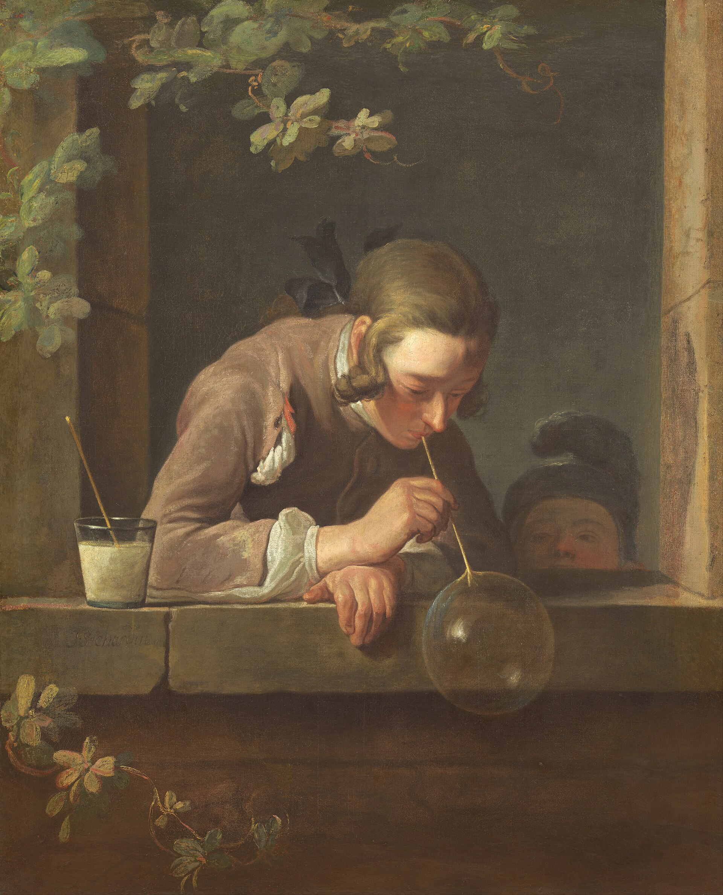
Link with the lesson: a quiet moment of play that already asks who we are becoming.
- What is the young person doing?
- Is the mood noisy or concentrated?
- Why can a simple game become an image of growing up?
- Blowing a soap bubble and watching it.
- Concentrated: the face and hands are careful.
- Because growing up is learning to look, wait and choose.
Text: a self-portrait in words
My name is Maya. I'm fifteen. People say I'm quiet, but I'm not shy: I listen first. I used to hide behind books; now I speak when I have something true to say.
I have already changed schools twice. I have lived in this town for three years. What I want is simple: to choose my words with care, and to keep my curiosity.
Text written for this unit by Madame Carole Paoli Pompougnac.
Building your vocabulary
| quiet | not loud; calm |
| shy | afraid to speak to people |
| curious | wanting to learn and understand |
| to compare | to look at differences |
| a portrait | a picture or description of a person |
Questions
- Is Maya shy? Quote the text.
- Find one sentence with used to.
- Find two present perfect forms.
- What does Maya want?
- Would you describe yourself as quiet? Why or why not?
- No: “I'm not shy: I listen first.”
- “I used to hide behind books.”
- “I have already changed”, “I have lived”.
- To choose her words with care and keep her curiosity.
- Open answer.
Rule : adjectives of character
Useful adjectives: quiet, curious, patient, brave, honest, stubborn, cheerful, thoughtful.
Order before a noun: opinion + size + age + colour: a thoughtful young girl.
After be: She is thoughtful. After look / seem: She looks unsure.
Exercise : precise adjectives
Choose the best word.
- Maya is not shy : she listens first.
- She used to be more quiet at school.
- A thoughtful person thinks before speaking.
- He seems honest when he explains his idea.
Dictation
Homework for tomorrow
- Learn the vocabulary. Highlight one colour for new words.
- Write five sentences describing yourself with precise adjectives.
- Copy the rule in your exercise book.
My end-of-lesson weather check
Take two minutes for yourself. Your answers stay private: they are kept only on this device, the page sends nothing and nobody else can see them. If you want, you can show them to your teacher.
Lesson 2 : Used to and the present perfect
Objective : contrast past habits with recent change; use for, since, just, already, yet.
Déroulé de la séance Prof
- Observe Gainsborough.
- Read the dialogue.
- Questions.
- Rule: used to / present perfect.
- Exercise, dictation, homework.
The painting
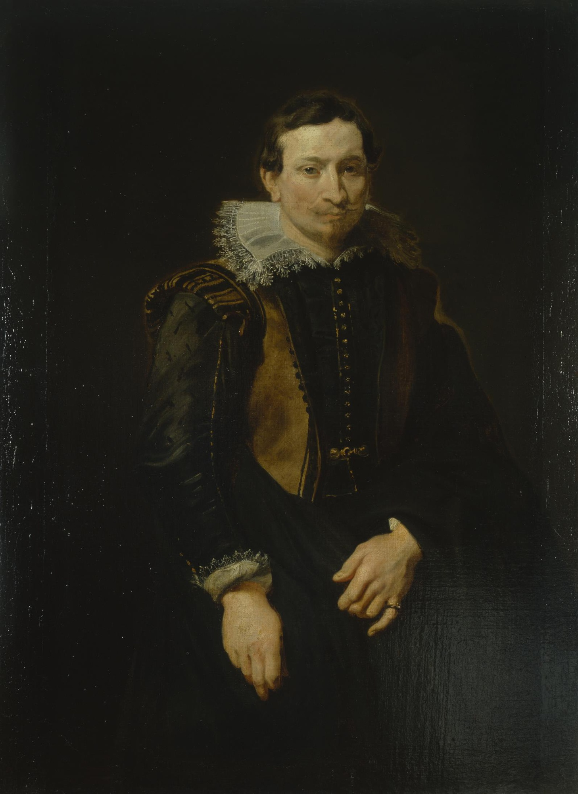
Link with the lesson: a calm, confident look — the opposite of hiding behind old habits.
- How is the young man dressed?
- Does he look shy or confident?
- What detail shows care about appearance?
- In dark elegant clothes with a white collar.
- Confident: he looks towards us.
- The careful collar and pose.
Text: then and now
“Did you use to play football every day?” “Yes, I used to. I don't any more: I have just joined the drama club.”
“Have you finished your portrait yet?” “I have already written the first paragraph, but I haven't chosen the title yet. I have lived with this idea for weeks.”
Text written for this unit by Madame Carole Paoli Pompougnac.
Building your vocabulary
| a habit | something you do regularly |
| to join | to become a member of |
| yet | until now, in questions and negatives |
| already | sooner than expected |
| just | a very short time ago |
Questions
- Find two examples of used to.
- Find just, already and yet.
- Has the speaker finished the portrait?
- Rewrite: I played tennis every Sunday (past habit).
- Ask a question with yet.
- “Did you use to play…”, “I used to.”
- just joined; already written; haven't… yet.
- No, not completely.
- I used to play tennis every Sunday.
- Have you finished your homework yet?
Rule : used to / present perfect
used to + verb = a past habit that has stopped: I used to hide. Question: Did you use to…?
Present perfect = have/has + past participle. for + duration, since + starting point. just / already / yet with recent actions.
Exercise : choose the form
Choose the right option.
- I used to live in Lyon.
- She has lived here for three years.
- He has just arrived.
- Have you packed yet ?
Dictation
Homework for tomorrow
- Write six sentences: three with used to, three with the present perfect.
- Learn the rule. Use highlighters: rule / example.
My end-of-lesson weather check
Take two minutes for yourself. Your answers stay private: they are kept only on this device, the page sends nothing and nobody else can see them. If you want, you can show them to your teacher.
Lesson 3 : A letter to my future self
Objective : write a short personal letter with connectors; revise spelling carefully.
Déroulé de la séance Prof
- Observe Rembrandt.
- Read the model letter.
- Questions.
- Rule: because, although, however.
- Writing workshop, dictation, homework.
The painting
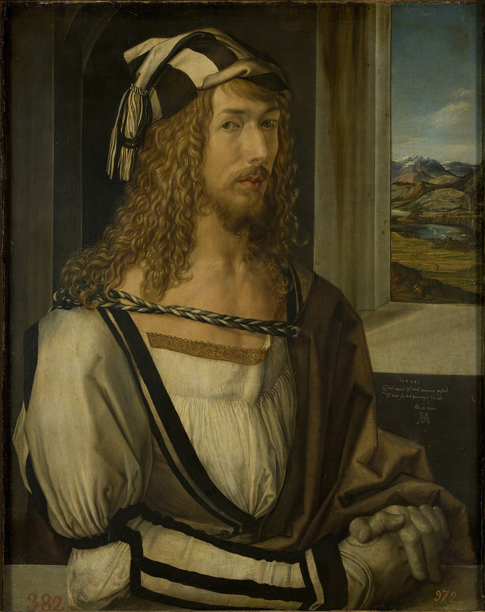
Link with the lesson: writing to your future self begins with daring to look at who you are now.
- Where does the light fall on the face?
- What emotion do you read?
- Why do artists paint themselves so often?
- On one side of the face; the rest stays softer.
- Seriousness, self-awareness, perhaps pride.
- To understand who they are becoming.
Text: Dear Future Me
Dear Future Me, I am writing from the desk near the window. Although school feels hard this year, I am learning to speak with care. I have already found words that fit me better.
However, I still need patience. Because I want doors to open, I will practise every evening. Keep your curiosity. Yours, Maya.
Text written for this unit by Madame Carole Paoli Pompougnac.
Expanding your vocabulary
| although | even if |
| however | but, used to start a contrast |
| patience | the ability to wait calmly |
| a desk | a table for writing |
| to fit | to be right for someone |
Questions
- Who is the letter for?
- Find although, however and because.
- What has Maya already found?
- What must she keep?
- Write your own opening sentence for a letter to your future self.
- Her future self.
- Although school feels hard; However, I still need; Because I want doors…
- Words that fit her better.
- Her curiosity.
- Open answer.
Rule : connectors: because, although, however
because + reason: I practise because I want to improve.
although + contrast inside the sentence: Although it is hard, I continue.
However often starts a new sentence: However, I still need patience.
Exercise : connectors
Choose the right connector.
- I revise every evening because I want a clear mark.
- Although I am tired, I finish my homework.
- The draft is ready. However , I must check spelling.
- She speaks carefully because words matter.
Writing workshop
Write a letter to your future self (80 to 100 words). Use although, however and because. Then reread three times: meaning, rich words, spelling.
Dictation
Homework for tomorrow
- Finish your letter in your exercise book.
- Underline the three connectors.
- Practise reading it aloud once.
My end-of-lesson weather check
Take two minutes for yourself. Your answers stay private: they are kept only on this device, the page sends nothing and nobody else can see them. If you want, you can show them to your teacher.
Lesson 4 : Final task: This is who I am becoming
Objective : give a two-minute talk with a clear structure; use the speaking tutorial.
Déroulé de la séance Prof
- Recall the paintings of the unit.
- Read the model talk.
- Questions.
- Prepare with the tutorial.
- Record yourself once.
The painting
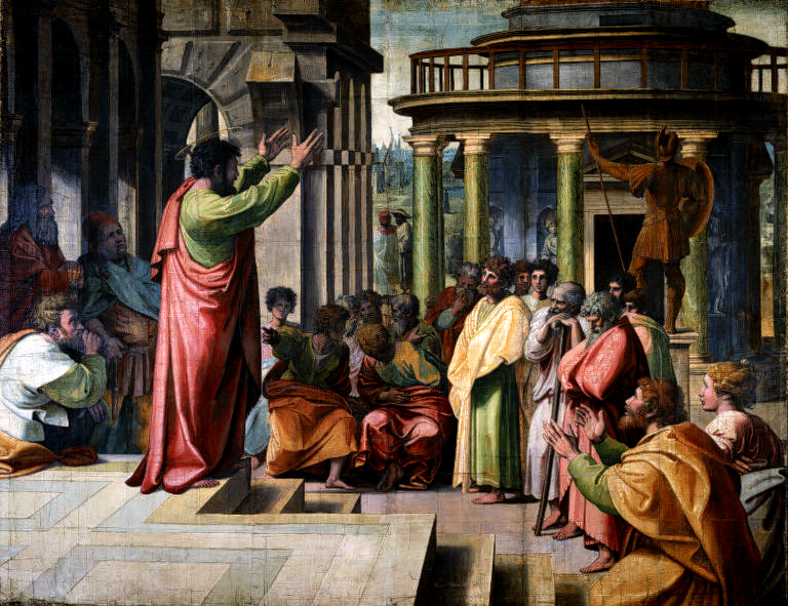
Link with the lesson: speaking in public means standing for ideas with a clear voice and a steady body.
- Who is speaking, and where does he stand?
- How do the listeners react?
- Why is this a painting about speech and courage?
- Saint Paul, raised on a platform, arms open.
- Some lean in, some look doubtful, some discuss.
- Because he stands alone to explain his ideas aloud to a crowd.
Text: model talk
Good morning. Today I want to talk about who I am becoming. First, I used to be afraid of mistakes. Then I learned that careful words are a strength. Finally, I have just started drama club, and I speak a little more every week.
Speaking well is not the language of the rich. It belongs to me. Thank you for listening.
Text written for this unit by Madame Carole Paoli Pompougnac.
Building your vocabulary
| a mistake | something incorrect |
| a strength | a quality that helps you |
| to belong | to be yours |
| every week | each week |
| finally | used to introduce the last idea |
Questions
- How many parts does the talk have?
- Find used to and the present perfect.
- How does the speaker finish?
- Which tutorial will you use?
- Write your first and last sentences.
- Three ideas: First, Then, Finally, plus greeting and thanks.
- used to be afraid; have just started.
- With the message about speaking well, then “Thank you for listening.”
- Preparing a short talk.
- Open answer.
Rule : structuring a short talk
Greeting → announce the topic → First / Then / Finally → strong last sentence → Thank you.
Use key words on a card, not full sentences. Stand up. Look at your audience.
Exercise : order the talk
Choose what comes next.
- After “Good morning”, I announce my topic .
- To organise ideas I use First, Then, Finally .
- On my card I write key words .
- I end with Thank you for listening .
Speaking tutorial: Preparing a short talk
Your voice belongs to you. Speaking well is not the language of the rich. It is your added value, something that belongs to you personally, like your beauty or your charisma. Nobody can ever take it away from you.
Step by step:
- Read the task twice. Underline what you must do and how long you must speak.
- Write five key words, not sentences.
- Prepare your first sentence and your last sentence in full.
- Practise twice, standing up, with a timer.
- Breathe in slowly, look at your audience, smile and start.
Model: “Hello everyone. Today I'm going to talk about Sherlock Holmes. First, ... Then, ... Finally, ... Thank you for listening!”
My checklist:
Speaking tutorial: Recording yourself and assessing your work
Your voice belongs to you. Speaking well is not the language of the rich. It is your added value, something that belongs to you personally, like your beauty or your charisma. Nobody can ever take it away from you.
Step by step:
- With an adult's permission, use a voice recorder in a quiet place. The recording is for you only.
- Record yourself once without stopping.
- Listen with the checklist. Write one strong point and one thing to improve.
- Record yourself again and compare.
- Delete your recordings when you no longer need them.
Model listening sheet: Strong point: “my pronunciation of -ed is good.” To improve: “I speak too fast.”
My checklist:
Dictation
Homework for tomorrow
- Write your talk key words on a card.
- Practise twice with a timer (two minutes).
- Revise the unit with the recap.
My end-of-lesson weather check
Take two minutes for yourself. Your answers stay private: they are kept only on this device, the page sends nothing and nobody else can see them. If you want, you can show them to your teacher.
Tests: Unit 1
Objective : check your grammar, reading, writing and speaking on identity.
Before the test: where am I?
| I can… | Not yet | Getting there | I can do it |
|---|---|---|---|
| I can describe myself with precise adjectives. | |||
| I can use used to for past habits. | |||
| I can use the present perfect with for, since, just, already, yet. | |||
| I can link ideas with because, although, however. | |||
| I can write a short letter to my future self. | |||
| I can give a two-minute talk. |
Quick test (out of 10)
Answer, then check.
- I used to hide behind books.
- She has lived here since 2024.
- Although it is hard, I continue.
- Have you finished yet ?
- A thoughtful person thinks first.
Reading test (out of 20)
Read the text, then answer in English.
Leo is fifteen. He used to spend every evening on his phone. Now he has joined the school choir. He has already learned three songs, but he hasn't sung alone yet. Although he feels nervous, he practises because he wants to be heard for the right reasons.
Text written for this unit by Madame Carole Paoli Pompougnac.
- What did Leo use to do? (2 points)
- What has he joined? (2 points)
- Find already and yet. (3 points)
- Why does he practise? (3 points)
- Rewrite the first two sentences with your own habits. (4 points)
- Explain in three sentences what “heard for the right reasons” means to you. (6 points)
- He used to spend every evening on his phone.
- The school choir.
- already learned; hasn't sung alone yet.
- Because he wants to be heard for the right reasons.
- Open answer with used to + present.
- Open answer.
Writing test: letter to your future self (out of 20)
Write 80 to 100 words. Use although, however, because, and at least one present perfect.
| Criterion | Not met | Partly met | Met |
|---|---|---|---|
| Task respected (letter form, length). (4 points) | 0-1 | 2-3 | 4 |
| Connectors used correctly. (4 points) | 0-1 | 2-3 | 4 |
| Present perfect and/or used to. (4 points) | 0-1 | 2-3 | 4 |
| Precise vocabulary. (4 points) | 0-1 | 2-3 | 4 |
| Spelling and punctuation. (4 points) | 0-1 | 2-3 | 4 |
Speaking test: two-minute talk (out of 20)
Give your talk “This is who I am becoming” without reading full sentences.
| Criterion | Not met | Partly met | Met |
|---|---|---|---|
| Clear structure (First / Then / Finally) | 5 | ||
| Correct grammar targets | 5 | ||
| Pronunciation and voice | 5 | ||
| Eye contact and posture | 5 |
Dictation (out of 20)
Marking for the dictation Prof
Start from 20. Take off 1 point per mistake. DYS version: gap-fill dictation, 2.5 points per correct word.
Adapted test (out of 20) DYS
Same objectives. Choose the right answer.
- Maya is not shy .
- I used to hide.
- She has lived here for three years.
- Although it is hard, I continue.
- Have you finished yet ?
Recap: Unit 1
Everything to remember before the test.
I remember
- Precise adjectives describe character.
- used to = past habit that has stopped.
- Present perfect with for / since / just / already / yet.
- because / although / however link ideas.
- A short talk needs First / Then / Finally.
Building your vocabulary
| shy | afraid to speak |
| curious | wanting to understand |
| although | even if |
| however | but, for contrast |
| patience | waiting calmly |
| a strength | a helpful quality |
Grammar
used to + verb ; have/has + past participle ; because / although / however.
I revise
- Read the texts aloud.
- Redo the exercises.
- Practise your talk.
- Fill in “Before the test: where am I?”.
Voices across the English-speaking world
What stories do English-speaking countries tell about freedom and belonging?
About the unit
Cultural theme: Rencontres avec d'autres cultures ; Voyages et migrations (cycle 4, BO n° 31 of 30 July 2020).
Fiche d'identité Prof
Length: 4 lessons, then tests and recap.
Grammar: past perfect; passive (present and past); relative clauses with who / which / where.
Final task: a three-minute presentation of a place linked to English-speaking history (spoken production).
Help in class
Use Classroom English: “Work in pairs.” “Underline the key words.”
The path
Lesson 1 : I hear America singing
Objective : understand a short poem; talk about everyday work and dignity.
Déroulé de la séance Prof
- Observe Leutze.
- Read Whitman's lines.
- Questions.
- Rule: relative clauses who/which.
- Exercise, dictation, homework.
The painting
Link with the lesson: a famous English-speaking history scene — a nation founded through words, courage and shared decision.
- What document is being presented?
- Where does the light fall?
- Why paint a room of debate rather than a battlefield?
- The draft of the Declaration of Independence.
- On the committee and the table with the text.
- To show that words and civic courage can found a nation.
Text: Whitman
I hear America singing, the varied carols I hear,
Those of mechanics, each one singing his as it should be blithe and strong,
The carpenter singing his as he measures his plank or beam…
Walt Whitman, Leaves of Grass, 1855, “I Hear America Singing” (short extract). Public domain.
Expanding your vocabulary
| varied | of different kinds |
| a mechanic | a worker who repairs machines |
| blithe | cheerful |
| to measure | to find the size of |
| a plank | a long flat piece of wood |
Questions
- Who is singing?
- What does “varied carols” suggest?
- Find workers named in the extract.
- Why does Whitman listen to workers?
- Name one worker in your town and one tool they use.
- America's workers.
- Many different songs / voices.
- Mechanics, the carpenter.
- Because everyday work has dignity and music.
- Open answer.
Rule : relative clauses: who / which
who for people: the carpenter who measures the plank.
which for things: the song which he sings.
where for places: the town where I live.
Exercise : who or which
Choose who or which.
- The carpenter who measures the plank is careful.
- The song which he sings is strong.
- The boat which crosses the river is heavy.
- The leader who stands at the front looks ahead.
Dictation
Homework for tomorrow
- Learn the vocabulary.
- Write four sentences with who and which about people in your street.
My end-of-lesson weather check
Take two minutes for yourself. Your answers stay private: they are kept only on this device, the page sends nothing and nobody else can see them. If you want, you can show them to your teacher.
Lesson 2 : A short address
Objective : understand a historic speech extract; use the past perfect for earlier past.
Déroulé de la séance Prof
- Observe the painting again.
- Read Lincoln's lines.
- Questions.
- Rule: past perfect.
- Exercise, dictation, homework.
The painting
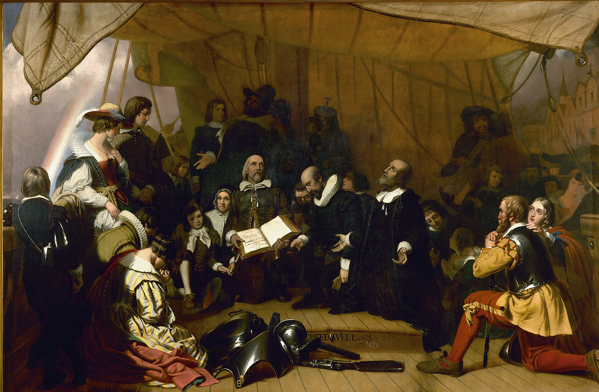
Link with the lesson: leaving a harbour — hope and farewell in one English-speaking departure story.
- What are the people doing?
- Is the mood only happy?
- Why do people leave their country?
- They gather to embark on a ship.
- No: prayer, hope and sadness mix.
- Open answer: belief, work, safety, family.
Text: Lincoln at Gettysburg
Four score and seven years ago our fathers brought forth on this continent, a new nation, conceived in Liberty, and dedicated to the proposition that all men are created equal.
…that government of the people, by the people, for the people, shall not perish from the earth.
Abraham Lincoln, Gettysburg Address, 19 November 1863. Public domain, short extract.
Building your vocabulary
| liberty | freedom |
| dedicated | given completely to an idea |
| equal | having the same rights |
| government | the people who lead a country |
| to perish | to disappear / die |
Questions
- What idea is the nation dedicated to?
- Explain “of the people, by the people, for the people”.
- Find words linked to freedom.
- Had the nation been created before Lincoln spoke? How do you know?
- Why are these words still quoted?
- That all men are created equal.
- Power comes from citizens, is used by them, serves them.
- Liberty, equal.
- Yes: “Four score and seven years ago our fathers brought forth…” — earlier past.
- Open answer: they speak about democracy and equality.
Rule : the past perfect
Past perfect = had + past participle. It shows an action before another past action: The nation had been created before Lincoln spoke.
Signal words: before, after, already, by the time.
Exercise : past perfect
Choose the right form.
- By 1863, the nation had existed for eighty-seven years.
- Before the speech, many soldiers had died .
- After they had left the harbour, the ship sailed.
- She had already read the address before class.
Dictation
Homework for tomorrow
- Write five sentences with the past perfect.
- Learn Lincoln's last sentence by heart.
My end-of-lesson weather check
Take two minutes for yourself. Your answers stay private: they are kept only on this device, the page sends nothing and nobody else can see them. If you want, you can show them to your teacher.
Lesson 3 : Arrival stories
Objective : read a migration narrative; use the passive.
Déroulé de la séance Prof
- Observe Edward Moran.
- Read the arrival text.
- Questions.
- Rule: the passive.
- Exercise, dictation, homework.
The painting
Link with the lesson: music, flag and forward movement — an image of liberty that newcomers could recognise.
- What three figures lead the march?
- What symbols of a nation do you see?
- What feeling does the painting try to share?
- Two drummers and a fife player.
- The flag, the drums, the determined walk.
- Courage, pride, forward motion.
Text: first morning in New York
The ship had been checked before sunrise. Names were written carefully in a big book. Questions were asked in English and in other languages.
A small bag was carried by my grandmother. Hope was kept alive by letters from home. The city was seen first through fog, then through tears of relief.
Text written for this unit by Madame Carole Paoli Pompougnac.
Expanding your vocabulary
| sunrise | the moment the sun appears |
| relief | a feeling of comfort after worry |
| fog | thick cloud low on the ground |
| to check | to control / verify |
| a harbour | a safe place for ships |
Questions
- Find three passive forms.
- What had happened before sunrise?
- Who carried the bag?
- Rewrite “Questions were asked” in the active.
- Why is fog a strong image for arrival?
- had been checked; were written; were asked; was carried; was kept; was seen.
- The ship had been checked.
- The grandmother.
- Officials asked questions.
- Open answer: you can't see clearly yet; the future is unclear.
Rule : the passive
Passive = be + past participle. Present: Names are written. Past: Names were written. Past perfect: had been checked.
Use the passive when the action matters more than who does it, or when we do not know the agent.
Exercise : active or passive
Choose the passive form.
- Names were written in a book.
- The ship had been checked before sunrise.
- Letters were sent from home.
- The statue was seen through fog.
Dictation
Homework for tomorrow
- Rewrite five active sentences in the passive.
- Ask a family member about an arrival story (school, town, country) and note three facts.
My end-of-lesson weather check
Take two minutes for yourself. Your answers stay private: they are kept only on this device, the page sends nothing and nobody else can see them. If you want, you can show them to your teacher.
Lesson 4 : Final task: present a place and its story
Objective : present a historic place in three minutes; interact with two questions.
Déroulé de la séance Prof
- Choose a place.
- Study the model.
- Prepare with tutorials.
- Present and answer questions.
The painting
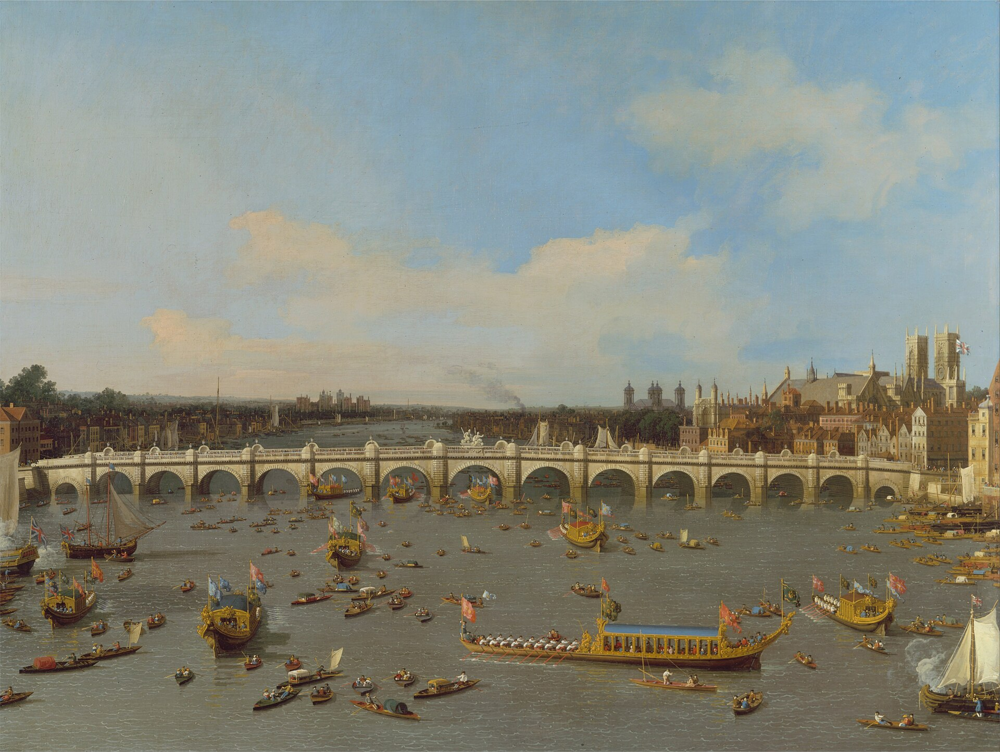
Link with the lesson: London as a capital of the English-speaking world — river, bridge and civic ceremony.
- What building line do you recognise across the river?
- Is the Thames busy or empty?
- Why is London a key city in this unit?
- The city skyline and Westminster area along the Thames.
- Busy: boats and a procession on the water.
- Because it is a historic political and cultural capital.
Text: model presentation
Hello everyone. Today I will present Ellis Island. First, where it is and what it was used for. Then, who arrived there. Finally, why this place still matters.
Ellis Island is in New York Harbour. Millions of immigrants were checked there. Many families had left Europe before they saw the statue. Thank you. I'm ready for your questions.
Text written for this unit by Madame Carole Paoli Pompougnac.
Building your vocabulary
| an immigrant | a person who comes to live in a new country |
| to matter | to be important |
| millions | a very large number |
| ready for | prepared for |
Questions
- What are the three parts of the model?
- Find a passive.
- Find a past perfect.
- Prepare two questions a classmate could ask you.
- Write your first sentence.
- Where/what; who; why it matters.
- were checked.
- had left.
- Open answer.
- Open answer.
Rule : presenting a place
Map the talk: place → people → why it matters. Use relative clauses and one passive. End by inviting questions: I'm ready for your questions.
Exercise : presentation language
Choose the best phrase.
- To start: Today I will present Ellis Island.
- To continue: Then I will explain who arrived.
- Passive: immigrants were checked there.
- To open questions: I'm ready for your questions .
Speaking tutorial: Preparing a short talk
Your voice belongs to you. Speaking well is not the language of the rich. It is your added value, something that belongs to you personally, like your beauty or your charisma. Nobody can ever take it away from you.
Step by step:
- Read the task twice. Underline what you must do and how long you must speak.
- Write five key words, not sentences.
- Prepare your first sentence and your last sentence in full.
- Practise twice, standing up, with a timer.
- Breathe in slowly, look at your audience, smile and start.
Model: “Hello everyone. Today I'm going to talk about Sherlock Holmes. First, ... Then, ... Finally, ... Thank you for listening!”
My checklist:
Speaking tutorial: Taking part in a discussion
Your voice belongs to you. Speaking well is not the language of the rich. It is your added value, something that belongs to you personally, like your beauty or your charisma. Nobody can ever take it away from you.
Step by step:
- Prepare two ideas and one example for each.
- Wait for your turn. Raise your hand or say: “Can I say something?”
- Give your opinion: “I think that…”, “In my opinion…”.
- Agree or disagree politely: “I agree with you because…”, “I see your point, but…”.
- Ask a question to keep the discussion going: “What do you think?”
- Respect everyone: no interrupting, no laughing at mistakes.
Model: “In my opinion, school uniforms are a good idea because everyone looks the same. I see your point, Lina, but what about personal style? What do you think?”
My checklist:
Dictation
Homework for tomorrow
- Prepare your three-minute card.
- Practise answers to two questions.
- Revise the recap.
My end-of-lesson weather check
Take two minutes for yourself. Your answers stay private: they are kept only on this device, the page sends nothing and nobody else can see them. If you want, you can show them to your teacher.
Tests: Unit 2
Objective : check reading, grammar, writing and speaking on the English-speaking world.
Before the test: where am I?
| I can… | Not yet | Getting there | I can do it |
|---|---|---|---|
| I can understand a short historic or poetic text. | |||
| I can use who / which / where. | |||
| I can use the past perfect. | |||
| I can form the passive. | |||
| I can present a place and answer questions. |
Quick test (out of 10)
Answer, then check.
- The carpenter who sings is proud.
- They had left before sunrise.
- Names were written in a book.
- Liberty means freedom .
- I'm ready for your questions .
Reading test (out of 20)
Read, then answer in English.
Before the ship entered the harbour, papers had been prepared. On the island, names were checked and questions were asked. The statue which stood in the water was seen by thousands of tired travellers who hoped for work and safety.
Text written for this unit by Madame Carole Paoli Pompougnac.
- What had been prepared before entering? (2)
- Find two passives. (4)
- Find who and which. (4)
- Why were travellers tired? Infer. (4)
- In six lines, explain why arrival stories still matter. (6)
- Papers.
- were checked; were asked; was seen / had been prepared.
- travellers who hoped; statue which stood.
- Long journey, fear, hope.
- Open answer.
Writing test (out of 20)
Write 90 to 110 words: present a place linked to English-speaking history. Use one relative clause, one past perfect, one passive.
| Criterion | Not met | Partly met | Met |
|---|---|---|---|
| Place clearly presented. (4) | 0-1 | 2-3 | 4 |
| Grammar targets used. (6) | 0-2 | 3-4 | 5-6 |
| Organisation and connectors. (5) | 0-2 | 3-4 | 5 |
| Spelling and vocabulary. (5) | 0-2 | 3-4 | 5 |
Speaking test (out of 20)
Three-minute presentation + two questions from the class.
| Criterion | Not met | Partly met | Met |
|---|---|---|---|
| Structure and timing | 5 | ||
| Grammar targets | 5 | ||
| Interaction quality | 5 | ||
| Voice and posture | 5 |
Dictation (out of 20)
Marking for the dictation Prof
Start from 20. Take off 1 point per mistake. DYS: gap-fill, 2.5 points per word.
Adapted test (out of 20) DYS
Choose the right answer.
- who = people; which = things .
- Past perfect: had + past participle .
- Names were written .
- Liberty means freedom .
- Ellis Island is in New York .
Recap: Unit 2
Key points before the test.
I remember
- Whitman celebrates workers' voices.
- Lincoln links liberty and equality.
- who / which / where.
- Past perfect for earlier past.
- Passive when the action matters.
Building your vocabulary
| liberty | freedom |
| equal | same rights |
| an immigrant | person arriving to live |
| harbour | safe place for ships |
| to perish | to disappear |
| relief | comfort after worry |
Grammar
who/which/where ; had + V-ed ; be + past participle.
I revise
- Reread Whitman and Lincoln.
- Redo passives.
- Practise your presentation.
- Fill the auto-evaluation.
True, false, and my voice online
How can we read the news and speak as responsible citizens?
About the unit
Cultural theme: École et société ; Langages (cycle 4, BO n° 31 of 30 July 2020). Media literacy and citizenship.
Fiche d'identité Prof
Grammar: reported speech (say/tell); first conditional; modals of advice (should, shouldn't, ought to).
Final task: a respectful debate on a school media rule (interaction).
Help in class
Phrases: “I see your point, but…”, “According to the article…”, “Can you show a source?”
The path
Lesson 1 : Reading a headline
Objective : spot facts and opinions; beware of sensational words.
Déroulé de la séance Prof
- Observe Daumier.
- Read headlines and a short article.
- Questions.
- Rule: fact vs opinion.
- Exercise, dictation, homework.
The painting
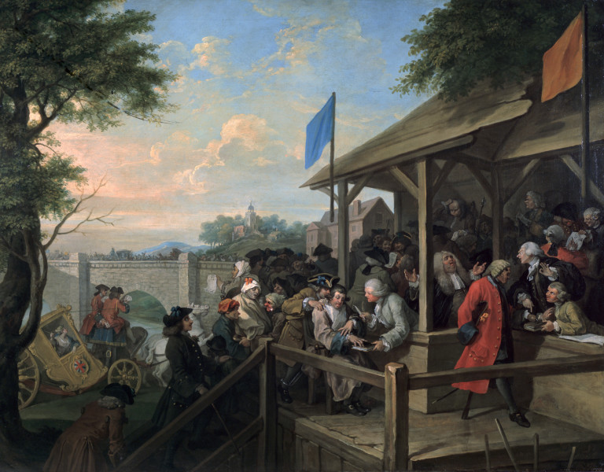
Link with the lesson: satire of public life — images and scenes that push citizens to judge what they see.
- What looks exaggerated or ridiculous?
- Is this a calm official scene?
- Why can a satirical image influence voters or readers?
- Gestures, chaos and comic details around the vote.
- No: it is noisy and critical.
- Because images guide emotion before facts.
Text: two headlines, one event
Headline A: “Local teens invent brilliant app to help neighbours.” Headline B: “Shock: students waste hours on useless phone project.”
Article: Yesterday, Year 9 students presented an app that maps quiet study places. The head teacher said the project was useful. Some parents told reporters they were proud.
Text written for this unit by Madame Carole Paoli Pompougnac.
Expanding your vocabulary
| a headline | the title of a news article |
| bias | an unfair preference |
| a source | where information comes from |
| proud | feeling pleased about something good |
| to waste | to use badly |
Questions
- Which headline is more positive?
- Find a fact in the article.
- Find an opinion word in headline B.
- What did the head teacher say?
- Rewrite headline B in a fairer way.
- Headline A.
- Students presented an app; it maps quiet study places.
- Shock, waste, useless.
- That the project was useful.
- Open answer, calmer wording.
Rule : fact and opinion
A fact can be checked. An opinion shows a judgement (brilliant, useless, shock).
Before sharing: Who wrote this? What is the source? What words push my emotion?
Exercise : fact or opinion
Choose fact or opinion.
- Students presented an app. → fact
- The app is brilliant. → opinion
- Some parents were proud. → fact (reported)
- The project is useless. → opinion
Dictation
Homework for tomorrow
- Find one online headline (with an adult). Label three words as fact-pushing or opinion.
- Learn the vocabulary.
My end-of-lesson weather check
Take two minutes for yourself. Your answers stay private: they are kept only on this device, the page sends nothing and nobody else can see them. If you want, you can show them to your teacher.
Lesson 2 : Reported speech
Objective : report what someone said with say and tell.
Déroulé de la séance Prof
- Quick oral warm-up.
- Read the dialogue.
- Questions.
- Rule: reported speech.
- Exercise, dictation, homework.
The painting
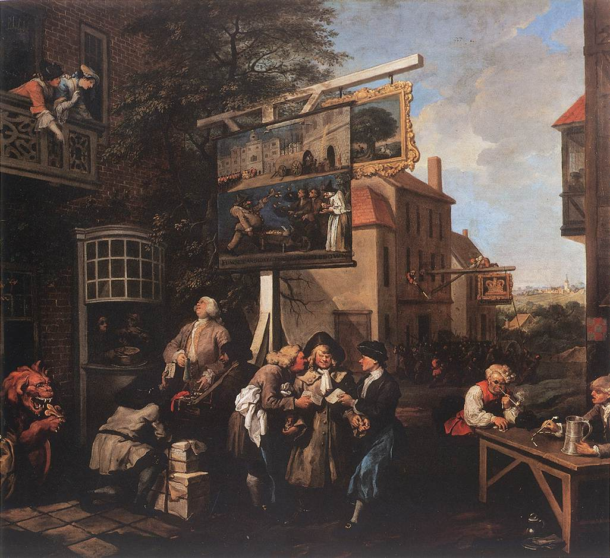
Link with the lesson: listening and judging what you hear — persuasion, attention and civic talk before you answer.
- What are the men in the foreground doing?
- How do faces show attention, doubt or interest?
- What classroom rule could come from this image?
- They try to persuade a voter with words and offers.
- Some lean in; others look doubtful or distracted.
- Listen fully before answering.
Text: interview at school
“We should check sources,” Maya said. She told the reporter that rumours spread fast.
The reporter asked: “Do you use social media?” Maya answered: “Yes, but I don't share if I'm not sure.” Later, the article said that Maya had advised patience.
Text written for this unit by Madame Carole Paoli Pompougnac.
Building your vocabulary
| a rumour | a story that may be false |
| to spread | to move to many people |
| to advise | to give advice |
| social media | online platforms for sharing |
| patience | staying calm |
Questions
- Quote a direct sentence.
- Turn it into reported speech.
- What is the difference between say and tell here?
- Find a warning about rumours.
- Report this: “I always check the date.”
- “We should check sources,” / “Yes, but…”
- Maya said (that) they should check sources.
- say + (that); tell + someone + (that).
- Rumours spread fast.
- She said that she always checked the date.
Rule : reported speech with say / tell
say (that) + clause. tell someone (that) + clause.
Present → past in reporting often: am → was, do → did, will → would, can → could, have → had, should stays should.
Exercise : report it
Choose the right reported form.
- “I am ready.” → She said she was ready.
- “We will check.” → They said they would check .
- “I can wait.” → He said he could wait .
- She told the reporter that rumours spread fast.
Dictation
Homework for tomorrow
- Report five sentences from yesterday's lessons.
- Copy the rule with highlighters.
My end-of-lesson weather check
Take two minutes for yourself. Your answers stay private: they are kept only on this device, the page sends nothing and nobody else can see them. If you want, you can show them to your teacher.
Lesson 3 : If we share without checking…
Objective : use the first conditional to talk about consequences.
Déroulé de la séance Prof
- Brainstorm consequences.
- Read the charter.
- Questions.
- Rule: first conditional.
- Exercise, writing, dictation, homework.
The painting
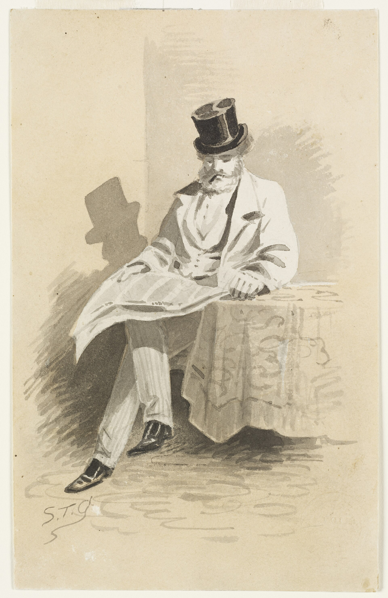
Link with the lesson: checking information quietly before sharing it.
- What is the man holding?
- Is he rushing or taking time?
- Why is reading before sharing a civic habit?
- A newspaper.
- He takes time: seated, focused.
- Because unchecked rumours can hurt people.
Text: class media charter
If we share a message without checking the source, we may hurt someone. If a rumour is false, we will delete it and apologise.
If you are not sure, you should ask an adult. If we disagree, we will attack the idea, not the person.
Text written for this unit by Madame Carole Paoli Pompougnac.
Expanding your vocabulary
| to hurt | to cause pain |
| to delete | to remove |
| to apologise | to say sorry |
| a charter | a list of shared rules |
| to disagree | to have a different opinion |
Questions
- Find three first conditionals.
- What should you do if you are not sure?
- What must we not attack?
- Write a conditional for homework.
- Why is apologising a civic act?
- If we share…; If a rumour is false…; If you are not sure…; If we disagree….
- Ask an adult.
- The person.
- Open answer.
- Open answer: it repairs trust.
Rule : first conditional
If + present simple, will/won't + verb (or can / should for advice).
If we check, we will be safer. If you aren't sure, you should wait.
Exercise : first conditional
Choose the right form.
- If we check, we will be safer.
- If a rumour is false, we will delete it.
- If you are not sure, you should ask an adult.
- If we disagree, we will discuss calmly.
Writing
Write a six-rule media charter for your class (80 words). Use at least three first conditionals.
Dictation
Homework for tomorrow
- Finish the charter in your binder.
- Learn three conditionals by heart.
My end-of-lesson weather check
Take two minutes for yourself. Your answers stay private: they are kept only on this device, the page sends nothing and nobody else can see them. If you want, you can show them to your teacher.
Lesson 4 : Final task: a respectful debate
Objective : debate a school rule with polite phrases; listen and reply.
Déroulé de la séance Prof
- Motion on the board.
- Model phrases.
- Debate in groups.
- Tutorials.
- Feedback.
The painting
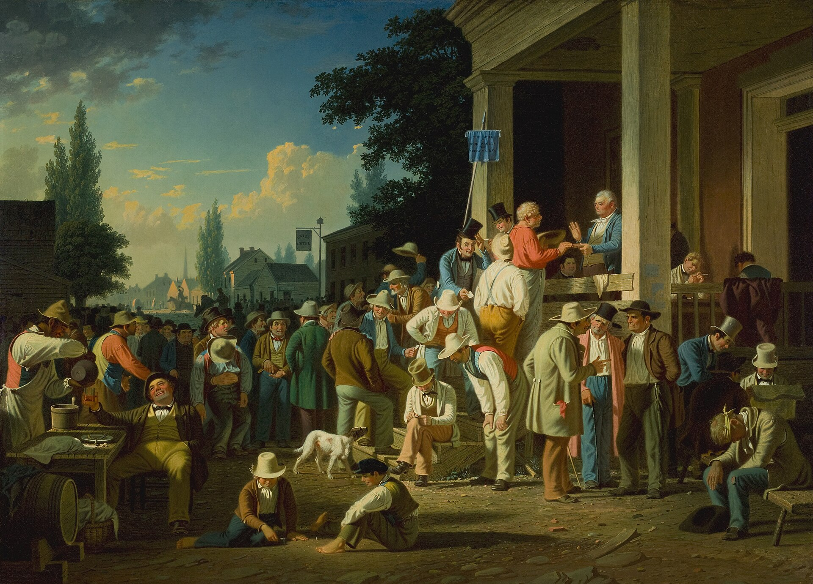
Link with the lesson: a civic crowd where opinions meet — debate needs listening as well as voice.
- Where is the ballot / voting activity?
- Do people only agree with each other?
- How is this linked to a respectful classroom debate?
- Near the steps and windows where votes are taken.
- No: groups talk, argue and persuade.
- You speak, you listen, you answer ideas without insults.
Text: debate motion
Motion: “Phones should stay in bags during the school day.”
For: concentration, equality, fewer rumours. Against: emergencies, learning tools, trust. Remember: I see your point, but… / According to… / Could you give an example?
Text written for this unit by Madame Carole Paoli Pompougnac.
Building your vocabulary
| a motion | the idea debated |
| concentration | focus |
| an emergency | a sudden serious situation |
| trust | belief that someone is reliable |
Questions
- State the motion in your own words.
- Give one argument for and one against.
- Which polite phrase will you use first?
- What will you do if you change your mind?
- Prepare two examples from school life.
- Open paraphrase.
- Open.
- Open from the list.
- Say it openly; changing mind is fine.
- Open.
Rule : polite disagreement
Phrases: I see your point, but… In my opinion… According to the article… Could you give an example? I partly agree because…
No insults. No street fillers as arguments. Attack ideas, not people.
Exercise : debate phrases
Choose the respectful option.
- To disagree: I see your point, but …
- To ask for proof: Could you give an example ?
- To quote: According to the article …
- Advice: phones should stay in bags during tests.
Speaking tutorial: Taking part in a discussion
Your voice belongs to you. Speaking well is not the language of the rich. It is your added value, something that belongs to you personally, like your beauty or your charisma. Nobody can ever take it away from you.
Step by step:
- Prepare two ideas and one example for each.
- Wait for your turn. Raise your hand or say: “Can I say something?”
- Give your opinion: “I think that…”, “In my opinion…”.
- Agree or disagree politely: “I agree with you because…”, “I see your point, but…”.
- Ask a question to keep the discussion going: “What do you think?”
- Respect everyone: no interrupting, no laughing at mistakes.
Model: “In my opinion, school uniforms are a good idea because everyone looks the same. I see your point, Lina, but what about personal style? What do you think?”
My checklist:
Speaking tutorial: Using your voice: stress and intonation
Your voice belongs to you. Speaking well is not the language of the rich. It is your added value, something that belongs to you personally, like your beauty or your charisma. Nobody can ever take it away from you.
Step by step:
- Stand up straight and breathe in slowly through your nose.
- Find the stressed syllable in each long word: TEAcher, deTECtive, HOLiday. Say it louder and longer.
- In a sentence, stress the important words: I WANT to VISit LONdon.
- Make your voice go down at the end of statements and Wh- questions: Where do you live?
- Make your voice go up at the end of yes/no questions: Do you like it?
- Practise three times, slowly, then a little faster.
Model: “ELementary, my dear WATson.” “HOW did you KNOW?” (voice goes down) “Have you BEEN to AfghanISTAN?” (voice goes up)
My checklist:
Dictation
Homework for tomorrow
- Prepare three arguments and one example each.
- Practise polite phrases aloud.
- Revise the recap.
My end-of-lesson weather check
Take two minutes for yourself. Your answers stay private: they are kept only on this device, the page sends nothing and nobody else can see them. If you want, you can show them to your teacher.
Tests: Unit 3
Objective : check media literacy language and citizenship speaking.
Before the test: where am I?
| I can… | Not yet | Getting there | I can do it |
|---|---|---|---|
| I can spot fact and opinion. | |||
| I can use reported speech. | |||
| I can use the first conditional. | |||
| I can disagree politely. | |||
| I can take part in a short debate. |
Quick test (out of 10)
Answer, then check.
- “Brilliant” in a headline is often an opinion .
- She said she was ready.
- If we check, we will be safer.
- She told him that it was false.
- I see your point, but …
Reading test (out of 20)
Read and answer.
The head teacher said that phones would stay in bags during tests. She told families that the rule protected concentration. If students need an emergency call, they will go to the office. Some students said they disagreed, but they promised to attack ideas, not people.
Text written for this unit by Madame Carole Paoli Pompougnac.
- Report the head teacher's rule in your words. (3)
- Find reported speech with tell. (3)
- Find a first conditional. (3)
- What civic promise do students make? (3)
- Write your opinion in six lines with one conditional and one polite phrase. (8)
- Phones in bags during tests.
- She told families that…
- If students need… they will go…
- To attack ideas, not people.
- Open.
Writing test (out of 20)
Write an opinion paragraph (90 words) on the motion about phones. Use one reported sentence, two conditionals, one polite contrast.
| Criterion | Not met | Partly met | Met |
|---|---|---|---|
| Opinion clear. (4) | 0-1 | 2-3 | 4 |
| Grammar targets. (6) | 0-2 | 3-4 | 5-6 |
| Respectful tone. (5) | 0-2 | 3-4 | 5 |
| Spelling. (5) | 0-2 | 3-4 | 5 |
Speaking test: debate (out of 20)
Two minutes: one argument, one reply to a classmate, one question.
| Criterion | Not met | Partly met | Met |
|---|---|---|---|
| Argument + example | 5 | ||
| Polite interaction | 5 | ||
| Grammar targets | 5 | ||
| Voice and listening | 5 |
Dictation (out of 20)
Marking Prof
Start from 20; −1 per mistake. DYS: gap-fill.
Adapted test (out of 20) DYS
Choose the right answer.
- Shock! is often opinion .
- She said she was ready.
- If we check, we will be safer.
- tell + someone .
- Disagree politely: I see your point, but .
Recap: Unit 3
Remember before the test.
I remember
- Fact vs opinion in headlines.
- say (that) / tell someone (that).
- If + present, will / should.
- Polite disagreement phrases.
- Attack ideas, not people.
Building your vocabulary
| headline | article title |
| bias | unfair preference |
| rumour | unchecked story |
| source | origin of information |
| charter | shared rules |
| motion | debate idea |
Grammar
Reported speech; first conditional; should / shouldn't.
I revise
- Redo headline exercise.
- Practise debate phrases.
- Revise reported speech.
- Auto-evaluate.
Tomorrow's questions
How do we imagine the future without losing clear thinking?
About the unit
Cultural theme: Langages ; Rencontres avec d'autres cultures. Science, future, responsible choices.
Fiche d'identité Prof
Grammar: future forms (will, going to, present continuous for plans); may / might; second look at conditionals.
Final task: a two-minute science pitch: “One invention, one risk, one hope.”
Help in class
Useful: “In the future…”, “This may help…”, “We might need to…”.
The path
Lesson 1 : A door onto another world
Objective : understand a classic SF opening; talk about fear and curiosity.
Déroulé de la séance Prof
- Observe Wright of Derby.
- Read Wells.
- Questions.
- Rule: will vs going to.
- Exercise, dictation, homework.
The painting
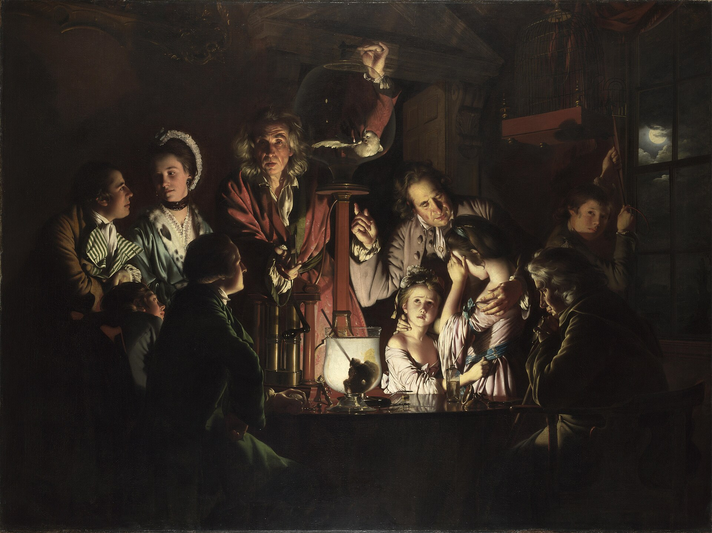
Link with the lesson: science that fascinates and unsettles — curiosity with a real risk in the glass.
- What object is at the centre?
- How are the faces lit?
- Is science here only comforting?
- An air pump with a bird inside the glass vessel.
- By a single lamp: strong contrasts.
- No: wonder mixes with fear and doubt.
Text: Wells
No one would have believed in the last years of the nineteenth century that this world was being watched keenly and closely by intelligences greater than man's…
Yet across the gulf of space, minds that are to our minds as ours are to those of the beasts that perish, intellects vast and cool and unsympathetic, regarded this earth with envious eyes…
H. G. Wells, The War of the Worlds, 1898, Book I, opening (short extract). Public domain.
Expanding your vocabulary
| keenly | with sharp attention |
| intelligence | the ability to think |
| a gulf | a wide gap |
| vast | very large |
| envious | wanting what others have |
Questions
- Who is watching the Earth?
- Find three adjectives for those minds.
- What feeling does the extract create?
- Why start a story this way?
- Would you have believed such news in 1898?
- Greater intelligences from space.
- vast, cool, unsympathetic.
- Fear, awe, curiosity.
- To surprise and make us feel small.
- Open.
Rule : will and going to
will: predictions, promises, decisions now: People will invent new tools.
going to: plans and evidence: I'm going to present my invention. Look at clouds: It's going to rain.
Exercise : will or going to
Choose.
- I am going to prepare my pitch tonight (plan).
- Scientists will ask new questions (prediction).
- Look at the sky: it is going to rain.
- I will help you with the poster.
Dictation
Homework for tomorrow
- Learn Wells vocabulary.
- Write four predictions with will and four plans with going to.
My end-of-lesson weather check
Take two minutes for yourself. Your answers stay private: they are kept only on this device, the page sends nothing and nobody else can see them. If you want, you can show them to your teacher.
Lesson 2 : May, might, and careful claims
Objective : express possibility without overclaiming.
Déroulé de la séance Prof
- Observe Vermeer.
- Read lab notes.
- Questions.
- Rule: may / might.
- Exercise, dictation, homework.
The painting
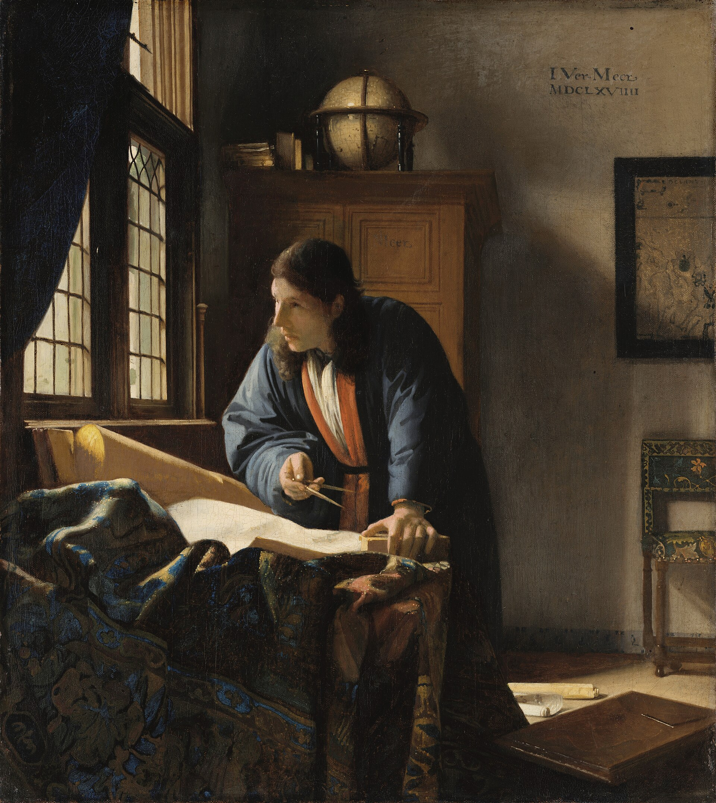
Link with the lesson: careful claims — maps, light and patience before certainty.
- What is the scholar studying?
- Where does the light come from?
- Why link patience and science?
- Maps and measuring tools on the table.
- From the window on the left.
- Because understanding takes time and careful words (may / might).
Text: lab notebook
This material may resist heat. It might help build safer batteries. We are not sure yet.
If tests fail, we will change the design. We might ask another school lab to check our results.
Text written for this unit by Madame Carole Paoli Pompougnac.
Building your vocabulary
| to resist | to not be damaged by |
| a battery | a store of electricity |
| a design | a plan of how something is made |
| a result | what you find after a test |
| careful | done with attention |
Questions
- Find may and might.
- Are the scientists certain? Quote.
- Find a conditional.
- Rewrite with more certainty (and say why it would be wrong).
- When should a citizen say “might” about science news?
- may resist; might help; might ask.
- “We are not sure yet.”
- If tests fail, we will change…
- Open.
- When proof is incomplete.
Rule : may and might
may / might + verb = possibility. Might is often a little less sure than may.
Negative: may not / might not. No -s: It may help.
Exercise : possibility
Choose.
- This idea might work.
- We may not have enough time.
- It might help patients.
- If tests fail, we will change the design.
Dictation
Homework for tomorrow
- Find a science news title with an adult and rewrite it with may/might if it overclaims.
My end-of-lesson weather check
Take two minutes for yourself. Your answers stay private: they are kept only on this device, the page sends nothing and nobody else can see them. If you want, you can show them to your teacher.
Lesson 3 : One invention, one risk, one hope
Objective : organise a reasoned paragraph; revise connecteurs.
Déroulé de la séance Prof
- Brainstorm inventions.
- Read the model.
- Questions.
- Rule: paragraph structure.
- Writing, dictation, homework.
The painting
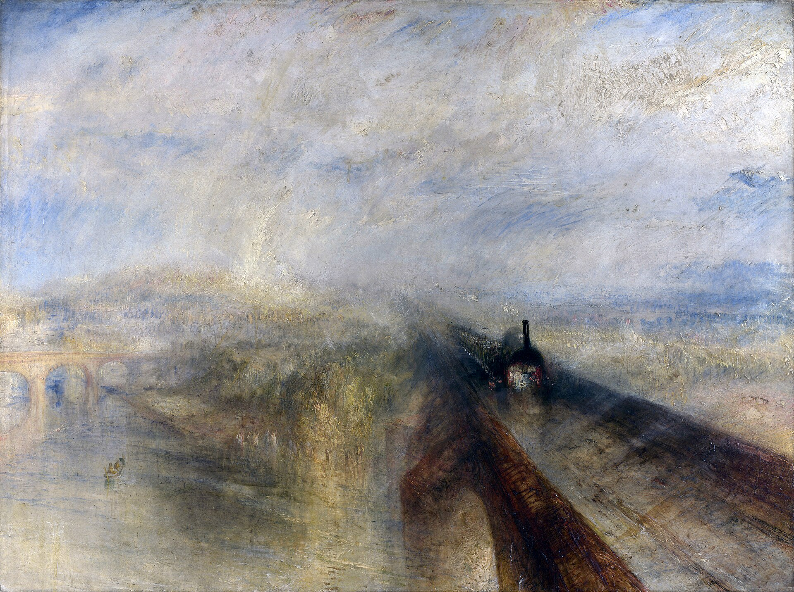
Link with the lesson: one invention, speed and risk — a train crossing through rain and light.
- What modern invention appears?
- Is the weather calm?
- What risk could speed symbolise?
- A steam train on a bridge.
- No: rain and swirling atmosphere.
- Accidents, loss of control, human cost — open.
Text: model paragraph
I am going to talk about water sensors for rivers. First, they will warn towns earlier. However, they may be expensive for small villages. Finally, I hope open data will help everyone protect clean water.
Text written for this unit by Madame Carole Paoli Pompougnac.
Expanding your vocabulary
| a sensor | a device that detects something |
| to warn | to tell about a danger |
| expensive | costing a lot |
| data | information |
| to protect | to keep safe |
Questions
- What are the three moves of the paragraph?
- Find will, may, going to.
- Find a contrast connector.
- Add one more risk.
- Add one more hope.
- Invention / risk / hope (First, However, Finally).
- will warn; may be; am going to talk.
- However.
- Open.
- Open.
Rule : a clear paragraph
Topic sentence → reason/example → contrast → hope/conclusion. Connectors: First, However, Finally, Therefore.
Exercise : build the paragraph
Choose the best link.
- First , sensors will warn towns.
- However , they may be expensive.
- Finally , open data could help.
- I am going to present water sensors.
Writing
Write 90 to 110 words: one invention, one risk, one hope. Use will, going to, may/might.
Dictation
Homework for tomorrow
- Finish the paragraph in your exercise book.
- Highlight future forms in three colours.
My end-of-lesson weather check
Take two minutes for yourself. Your answers stay private: they are kept only on this device, the page sends nothing and nobody else can see them. If you want, you can show them to your teacher.
Lesson 4 : Final task: science pitch
Objective : pitch in two minutes; answer one sceptical question.
Déroulé de la séance Prof
- Timer practice.
- Model pitch.
- Tutorials.
- Pitches + questions.
The painting
Link with the lesson: making technology with heat and skill — a pitch needs proof of work, not only hope.
- What work is being done?
- Who watches the forge?
- What question might a sceptic ask the workers?
- Metal is heated and shaped in a forge.
- A family group watches the glowing iron.
- Open: cost, danger, how do you know it works?
Text: pitch skeleton
Hook (one sentence). Invention (what it does). Risk (may/might). Hope (will). Invitation: “What would you like to ask?”
Text written for this unit by Madame Carole Paoli Pompougnac.
Building your vocabulary
| a pitch | a very short persuasive talk |
| a hook | an opening that catches interest |
| a sceptic | someone who doubts |
| proof | evidence |
Questions
- Write your hook.
- Write your risk with might.
- Write your hope with will.
- Prepare an answer to “How do you know?”
- Which tutorial helps your voice?
- Open.
- Open.
- Open.
- Open with may/might and a test idea.
- Using your voice / Preparing a short talk.
Rule : answering a sceptical question
Stay calm. Reformulate the question. Give one piece of proof or say what test you still need. Use may/might honestly.
Exercise : pitch language
Choose.
- Hook: Imagine a river that warns us .
- Risk: it might cost too much.
- Hope: it will protect water.
- Invite: What would you like to ask ?
Speaking tutorial: Preparing a short talk
Your voice belongs to you. Speaking well is not the language of the rich. It is your added value, something that belongs to you personally, like your beauty or your charisma. Nobody can ever take it away from you.
Step by step:
- Read the task twice. Underline what you must do and how long you must speak.
- Write five key words, not sentences.
- Prepare your first sentence and your last sentence in full.
- Practise twice, standing up, with a timer.
- Breathe in slowly, look at your audience, smile and start.
Model: “Hello everyone. Today I'm going to talk about Sherlock Holmes. First, ... Then, ... Finally, ... Thank you for listening!”
My checklist:
Speaking tutorial: Using your voice: stress and intonation
Your voice belongs to you. Speaking well is not the language of the rich. It is your added value, something that belongs to you personally, like your beauty or your charisma. Nobody can ever take it away from you.
Step by step:
- Stand up straight and breathe in slowly through your nose.
- Find the stressed syllable in each long word: TEAcher, deTECtive, HOLiday. Say it louder and longer.
- In a sentence, stress the important words: I WANT to VISit LONdon.
- Make your voice go down at the end of statements and Wh- questions: Where do you live?
- Make your voice go up at the end of yes/no questions: Do you like it?
- Practise three times, slowly, then a little faster.
Model: “ELementary, my dear WATson.” “HOW did you KNOW?” (voice goes down) “Have you BEEN to AfghanISTAN?” (voice goes up)
My checklist:
Speaking tutorial: Recording yourself and assessing your work
Your voice belongs to you. Speaking well is not the language of the rich. It is your added value, something that belongs to you personally, like your beauty or your charisma. Nobody can ever take it away from you.
Step by step:
- With an adult's permission, use a voice recorder in a quiet place. The recording is for you only.
- Record yourself once without stopping.
- Listen with the checklist. Write one strong point and one thing to improve.
- Record yourself again and compare.
- Delete your recordings when you no longer need them.
Model listening sheet: Strong point: “my pronunciation of -ed is good.” To improve: “I speak too fast.”
My checklist:
Dictation
Homework for tomorrow
- Practise the pitch twice and record once.
- Revise the unit recap.
My end-of-lesson weather check
Take two minutes for yourself. Your answers stay private: they are kept only on this device, the page sends nothing and nobody else can see them. If you want, you can show them to your teacher.
Tests: Unit 4
Objective : check future language and science discussion skills.
Before the test: where am I?
| I can… | Not yet | Getting there | I can do it |
|---|---|---|---|
| I can use will and going to. | |||
| I can use may and might. | |||
| I can structure invention / risk / hope. | |||
| I can answer a sceptical question calmly. | |||
| I can understand a short SF extract. |
Quick test (out of 10)
Answer.
- Plan: I am going to revise.
- Prediction: people will ask questions.
- Possibility: it might help.
- Contrast linker: However , …
- Wells wrote about intelligences in space.
Reading test (out of 20)
Read and answer.
We are going to test a small water sensor next month. It may fail in winter storms. If it works, villages will receive alerts earlier. Some engineers said that open data would help schools teach real science.
Text written for this unit by Madame Carole Paoli Pompougnac.
- Find going to, may, will. (3)
- Find a conditional. (3)
- Report what engineers said. (4)
- What risk is named? (2)
- Write invention / risk / hope in 6 lines about this sensor. (8)
- going to test; may fail; will receive.
- If it works, villages will…
- Engineers said that open data would help…
- Winter storms / failure.
- Open.
Writing test (out of 20)
90–110 words: one invention, one risk, one hope. Use will, going to, may/might.
| Criterion | Not met | Partly met | Met |
|---|---|---|---|
| Structure. (5) | 0-2 | 3-4 | 5 |
| Future forms. (5) | 0-2 | 3-4 | 5 |
| Precise vocab. (5) | 0-2 | 3-4 | 5 |
| Spelling. (5) | 0-2 | 3-4 | 5 |
Speaking test: pitch (out of 20)
Two-minute pitch + one answer to a sceptical question.
| Criterion | Not met | Partly met | Met |
|---|---|---|---|
| Hook and structure | 5 | ||
| Honest risk language | 5 | ||
| Answer quality | 5 | ||
| Voice | 5 |
Dictation (out of 20)
Marking Prof
Start from 20; −1 per mistake. DYS: gap-fill.
Adapted test (out of 20) DYS
Choose.
- Plan → going to .
- Prediction → will .
- Possibility → might .
- Wells: minds from space .
- A pitch is a short talk .
Recap: Unit 4
Before the test.
I remember
- will vs going to.
- may / might for careful claims.
- Invention / risk / hope.
- Wells opens with cosmic watchers.
- Answer sceptics calmly.
Building your vocabulary
| keenly | sharply attentive |
| vast | huge |
| sensor | detecting device |
| proof | evidence |
| pitch | short persuasive talk |
| sceptic | doubter |
Grammar
will / going to / may / might ; If + present, will.
I revise
- Reread Wells.
- Practise pitch.
- Redo future exercises.
Journeys, museums, and the words we bring home
What do travel and art teach us to say more precisely?
About the unit
Cultural theme: Voyages et migrations ; Rencontres avec d'autres cultures (cycle 4).
Fiche d'identité Prof
Grammar: revision of relative clauses; comparatives/superlatives; narrative tenses for a diary.
Final task: a museum audioguide stop (90 seconds) + expressive reading.
Help in class
Museum phrases: “On your left…”, “Look at the light…”, “This work shows…”.
The path
Lesson 1 : Upon Westminster Bridge
Objective : understand a poem about a city; read aloud with pauses.
Déroulé de la séance Prof
- Observe Constable / London view.
- Read Wordsworth.
- Questions.
- Rule: expressive reading marks.
- Tutorial, dictation, homework.
The painting
Link with the lesson: London seen from the bridge — a calm frame for Wordsworth’s morning city.
- What river do you see?
- Is the city shown as noisy or ordered?
- Why look at a city through an arch?
- The Thames.
- Ordered and luminous, with boats and buildings.
- The arch frames the view, like a pause before speaking of beauty.
Text: Wordsworth
Earth has not anything to show more fair:
Dull would he be of soul who could pass by
A sight so touching in its majesty…
This City now doth, like a garment, wear
The beauty of the morning; silent, bare…
William Wordsworth, “Composed upon Westminster Bridge”, 1802 (short extract). Public domain.
Expanding your vocabulary
| fair | beautiful |
| dull | lacking sensitivity |
| majesty | impressive beauty |
| a garment | a piece of clothing |
| bare | empty / not covered |
Questions
- What comparison does the poet use for the city?
- Who would be “dull… of soul”?
- Find words of beauty.
- Why “silent, bare”?
- Mark pauses with / in two lines.
- Like a garment.
- Someone who could pass by without noticing.
- fair, touching, majesty, beauty.
- Morning calm; streets not busy yet.
- Open marked lines.
Rule : expressive reading
Mark / at commas and ends of lines when sense allows. Stress key nouns: Earth, City, beauty, morning. Voice slightly lower on the last word of a thought.
Exercise : poem language
Choose.
- fair means beautiful here.
- The city wears morning beauty like a garment .
- A dull soul would pass by .
- We stress the word majesty for emotion.
Speaking tutorial: Reading aloud in English
Your voice belongs to you. Speaking well is not the language of the rich. It is your added value, something that belongs to you personally, like your beauty or your charisma. Nobody can ever take it away from you.
Step by step:
- Read the text silently first. Underline the words you can't pronounce and ask or check them.
- Mark the pauses with a slash / at each comma and full stop.
- Watch out for silent letters: knight, castle, listen, ghost.
- Link the words: an_apple, read_it_again.
- Read slowly, then read again with feeling: fear, surprise, joy.
- Look up from the text at the end of each sentence.
Model: “It is said / by some / to be the ghost / of a Hessian trooper.” The voice slows down on “ghost”.
My checklist:
Dictation
Homework for tomorrow
- Learn eight lines by heart or paraphrase them in six modern sentences.
- Practise reading aloud twice.
My end-of-lesson weather check
Take two minutes for yourself. Your answers stay private: they are kept only on this device, the page sends nothing and nobody else can see them. If you want, you can show them to your teacher.
Lesson 2 : A day in a museum
Objective : describe artworks with precise adjectives; use relative clauses.
Déroulé de la séance Prof
- Virtual museum path.
- Read the guide script.
- Questions.
- Rule: revision who/which/where.
- Exercise, dictation, homework.
The painting
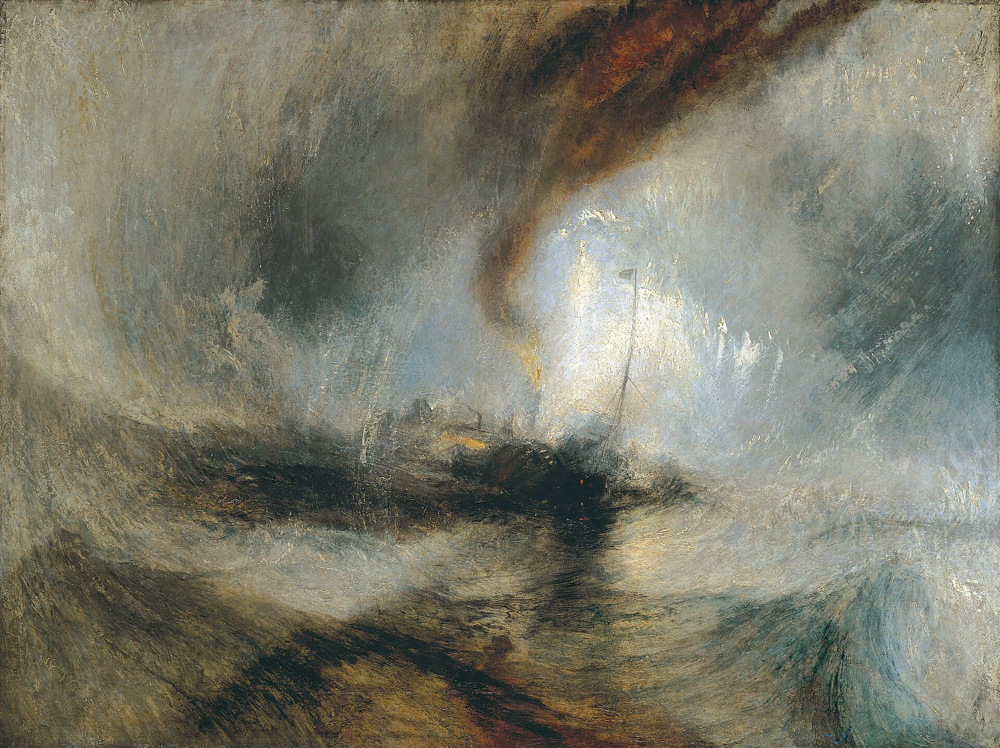
Link with the lesson: travel by steam in wild weather — change you can feel, not only describe.
- Can you see the boat clearly?
- What dominates: machine or storm?
- What feeling does the painting give travellers?
- Only partly: the storm almost swallows it.
- The storm and swirling sea.
- Danger, awe, respect for nature.
Text: audioguide stop
On your left is Turner's Fighting Temeraire. The sailing ship, which once fought for the nation, is pulled by a small steam tug.
Look at the light which burns in the sky. Visitors who stop here often speak more softly. This is the room where London remembers change.
Text written for this unit by Madame Carole Paoli Pompougnac.
Building your vocabulary
| a tug | a small powerful boat that pulls ships |
| a berth | a place for a ship to stay |
| nostalgia | a soft sadness for the past |
| to pull | to move something towards you |
| softly | quietly |
Questions
- Find who, which, where.
- What contrast does Turner show?
- Why might visitors speak softly?
- Write one sentence with which about a painting you know.
- Replace “softly” with another adverb.
- visitors who; ship which / light which; room where.
- Sail and steam; past and future.
- Respect, emotion.
- Open.
- quietly / gently…
Rule : relative clauses revisited
Keep who (people), which (things), where (places). Don't drop the clause needed for meaning in careful writing.
Exercise : relative clauses
Choose.
- the ship which once fought
- visitors who stop here
- the room where we remember
- the light which burns in the sky
Dictation
Homework for tomorrow
- Write an audioguide stop (6 sentences) for any public-domain painting in this year's museum.
My end-of-lesson weather check
Take two minutes for yourself. Your answers stay private: they are kept only on this device, the page sends nothing and nobody else can see them. If you want, you can show them to your teacher.
Lesson 3 : Travel diary
Objective : write a diary page with narrative tenses and comparisons.
Déroulé de la séance Prof
- Brainstorm a trip.
- Read the diary.
- Questions.
- Rule: past simple / continuous / perfect.
- Writing, dictation, homework.
The painting
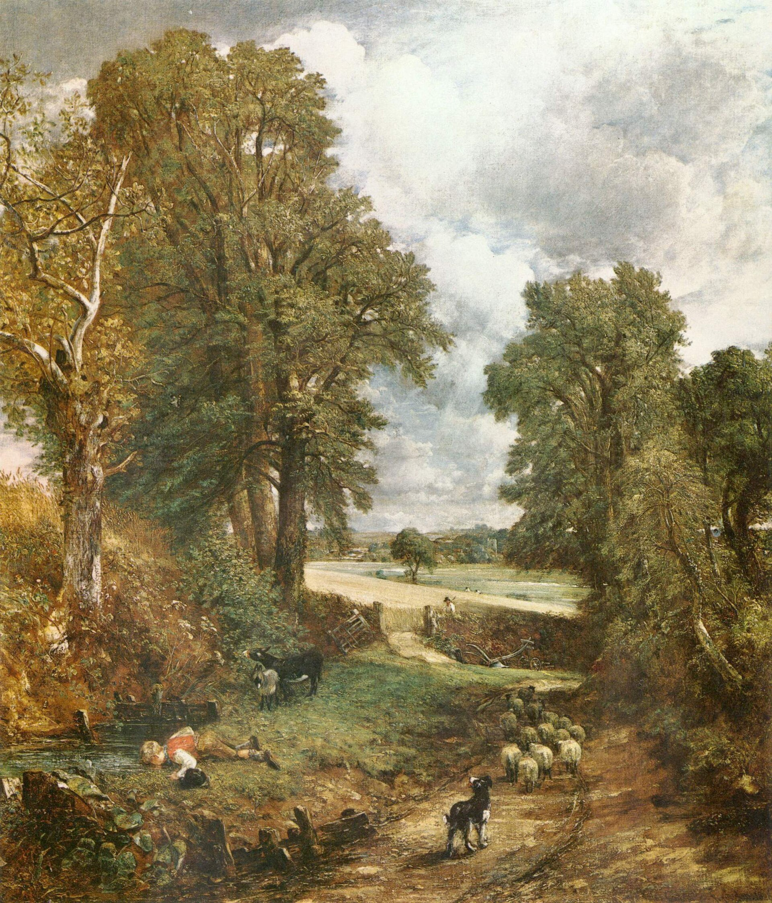
Link with the lesson: a slower journey through fields — diary time, not rush-hour time.
- Is this a rush or a pause?
- What sounds can you imagine?
- How is this travel different from a train journey?
- A pause in rural life along a lane.
- Birds, wind, footsteps, a stream.
- Slower, closer to landscape and weather.
Text: diary, day three
This morning we were walking along the Thames when the rain began. We had already visited the National Gallery, where I saw Turner's Temeraire.
London is busier than my town, but the river is calmer than I expected at sunrise. Tonight I am going to write postcards. I will never forget the light on the water.
Text written for this unit by Madame Carole Paoli Pompougnac.
Expanding your vocabulary
| a postcard | a card you send from a trip |
| busy | full of activity |
| sunrise | early morning light |
| to forget | to not remember |
| shallow | not deep |
Questions
- Find past continuous, past perfect, will, going to.
- Find a comparative.
- Where had they already been?
- What will the writer never forget?
- Write your own diary opening for a real or imagined trip.
- were walking; had already visited; will never forget; am going to write.
- busier than; calmer than.
- The National Gallery.
- The light on the water.
- Open.
Rule : narrative tenses for diaries
Past continuous for background: we were walking when… Past perfect for earlier past: we had already visited. Future for plans tonight: going to / will.
Exercise : diary tenses
Choose.
- We were walking when it rained.
- We had already visited the gallery.
- London is busier than my town.
- I am going to write postcards.
Writing
Write a diary page (100 words) about a real or imagined cultural trip. Use past continuous, past perfect, one comparative, one future form.
Dictation
Homework for tomorrow
- Finish the diary page.
- Underline each tense in a different colour.
My end-of-lesson weather check
Take two minutes for yourself. Your answers stay private: they are kept only on this device, the page sends nothing and nobody else can see them. If you want, you can show them to your teacher.
Lesson 4 : Final task: museum stop + expressive reading
Objective : guide listeners for 90 seconds; read Wordsworth expressively.
Déroulé de la séance Prof
- Rehearse.
- Tutorials.
- Perform.
- Peer checklist.
The painting
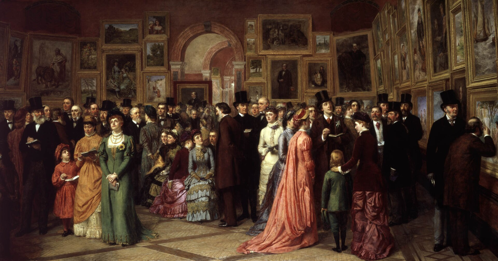
Link with the lesson: a museum room full of paintings and visitors — perfect for practising an audioguide stop.
- What kind of room is shown?
- Are visitors present?
- Why is this useful before a museum oral task?
- A grand gallery with many framed works.
- Yes: people look and talk among the paintings.
- Because you must guide the eye: choose one work, describe, invite a question.
Text: performance card
1) Welcome. 2) Artwork + one relative clause. 3) One feeling. 4) One question to the group. 5) Short Wordsworth lines with marked pauses.
Text written for this unit by Madame Carole Paoli Pompougnac.
Building your vocabulary
| to guide | to show the way |
| to notice | to see and pay attention |
| a performance | something presented to an audience |
Questions
- Write your welcome sentence.
- Write your relative clause.
- Mark pauses in two Wordsworth lines.
- Which tutorial helps reading?
- How long is the stop?
- Open.
- Open.
- Open.
- Reading aloud in English.
- About 90 seconds.
Rule : timing a museum stop
90 seconds: 15 welcome + work, 40 description, 20 feeling/link, 15 question. Then 30–40 seconds of verse if asked.
Exercise : guide phrases
Choose.
- On your left is Turner's painting.
- Look at the light which burns in the sky.
- Visitors who stop here speak softly.
- Invite: What do you notice first ?
Speaking tutorial: Reading aloud in English
Your voice belongs to you. Speaking well is not the language of the rich. It is your added value, something that belongs to you personally, like your beauty or your charisma. Nobody can ever take it away from you.
Step by step:
- Read the text silently first. Underline the words you can't pronounce and ask or check them.
- Mark the pauses with a slash / at each comma and full stop.
- Watch out for silent letters: knight, castle, listen, ghost.
- Link the words: an_apple, read_it_again.
- Read slowly, then read again with feeling: fear, surprise, joy.
- Look up from the text at the end of each sentence.
Model: “It is said / by some / to be the ghost / of a Hessian trooper.” The voice slows down on “ghost”.
My checklist:
Speaking tutorial: Preparing a short talk
Your voice belongs to you. Speaking well is not the language of the rich. It is your added value, something that belongs to you personally, like your beauty or your charisma. Nobody can ever take it away from you.
Step by step:
- Read the task twice. Underline what you must do and how long you must speak.
- Write five key words, not sentences.
- Prepare your first sentence and your last sentence in full.
- Practise twice, standing up, with a timer.
- Breathe in slowly, look at your audience, smile and start.
Model: “Hello everyone. Today I'm going to talk about Sherlock Holmes. First, ... Then, ... Finally, ... Thank you for listening!”
My checklist:
Speaking tutorial: Recording yourself and assessing your work
Your voice belongs to you. Speaking well is not the language of the rich. It is your added value, something that belongs to you personally, like your beauty or your charisma. Nobody can ever take it away from you.
Step by step:
- With an adult's permission, use a voice recorder in a quiet place. The recording is for you only.
- Record yourself once without stopping.
- Listen with the checklist. Write one strong point and one thing to improve.
- Record yourself again and compare.
- Delete your recordings when you no longer need them.
Model listening sheet: Strong point: “my pronunciation of -ed is good.” To improve: “I speak too fast.”
My checklist:
Dictation
Homework for tomorrow
- Rehearse twice; record once.
- Start revising all five units for the DNB preparation tab.
My end-of-lesson weather check
Take two minutes for yourself. Your answers stay private: they are kept only on this device, the page sends nothing and nobody else can see them. If you want, you can show them to your teacher.
Tests: Unit 5
Objective : check travel/arts language and oral guiding.
Before the test: where am I?
| I can… | Not yet | Getting there | I can do it |
|---|---|---|---|
| I can read a short poem expressively. | |||
| I can use who/which/where in descriptions. | |||
| I can write a diary with narrative tenses. | |||
| I can guide a museum stop. | |||
| I can compare places. |
Quick test (out of 10)
Answer.
- fair means beautiful in the poem.
- the ship which fought
- We were walking when it rained.
- London is busier than my town.
- On your left is the painting.
Reading test (out of 20)
Read and answer.
We were standing on Westminster Bridge when the morning light touched the river. We had already seen Turner's Temeraire in the gallery which faces Trafalgar Square. Visitors who love quiet moments prefer sunrise. The city looked fairer than in the noisy afternoon.
Text written for this unit by Madame Carole Paoli Pompougnac.
- Find past continuous and past perfect. (4)
- Find who and which. (4)
- Find a comparative. (2)
- Link this scene to Wordsworth in three sentences. (4)
- Write your own museum stop (6 lines). (6)
- were standing; had already seen.
- Visitors who; gallery which.
- fairer than.
- Open.
- Open.
Writing test (out of 20)
Diary page, 100 words, narrative tenses + comparative + relative clause.
| Criterion | Not met | Partly met | Met |
|---|---|---|---|
| Tenses. (6) | 0-2 | 3-4 | 5-6 |
| Relative clause + comparative. (4) | 0-1 | 2-3 | 4 |
| Cultural detail. (5) | 0-2 | 3-4 | 5 |
| Spelling. (5) | 0-2 | 3-4 | 5 |
Speaking test (out of 20)
90-second museum stop + 4 lines of Wordsworth read expressively.
| Criterion | Not met | Partly met | Met |
|---|---|---|---|
| Guide clarity | 5 | ||
| Relative clauses / vocab | 5 | ||
| Expressive reading | 5 | ||
| Timing and posture | 5 |
Dictation (out of 20)
Marking Prof
Start from 20; −1 per mistake. DYS: gap-fill.
Adapted test (out of 20) DYS
Choose.
- Wordsworth's city wears morning beauty like a garment .
- who → people; which → things .
- were walking = past continuous .
- busier than = comparative .
- Audioguide phrase: On your left .
Recap: Unit 5
Last thematic unit before intensive DNB prep.
I remember
- Wordsworth's morning London.
- Turner: sail and steam.
- who/which/where.
- Diary tenses.
- Museum guide phrases.
Building your vocabulary
| majesty | impressive beauty |
| garment | clothing |
| tug | pulling boat |
| nostalgia | soft sadness for past |
| softly | quietly |
| postcard | trip card |
Grammar
Relative clauses; past continuous/perfect; comparatives; will/going to.
I revise
- Reread Wordsworth.
- Practise audioguide.
- Open the DNB preparation sequence.
Five skills for continuous assessment towards the DNB
How do I prove A2 to A2+/B1 in listening, reading, writing and speaking in class?
About the DNB preparation
Framework: From session 2026, for school candidates, modern languages count in the DNB through the annual average of the subject (contrôle continu), not through a separate written language exam. Classroom work still trains the five language activities at A2 (towards A2+/B1 in LV1). Reference: CEFR descriptors and cycle 4 programme (BO n° 31 of 30 July 2020); DNB note de service MENE2515977N (BO n° 33, 11 September 2025). The written LV paper (1 h 30) exists only for individual candidates.
Fiche d'identité Prof
Skills: listening; reading; writing; spoken production; spoken interaction.
Mock exam: listening-style task (script read by the teacher), reading, writing 60–80 words, spoken production, interaction.
Help in class
Exam phrases: “Could you repeat the question, please?”, “I need a few seconds to think.”, “If I understand correctly…”.
The path
Lesson 1 : Listening (compréhension de l'oral)
Objective : train listening for gist and detail at A2/A2+.
Déroulé de la séance Prof
- Explain expectations.
- Method.
- First listening without text.
- Second listening.
- Graded practice /20, homework.
The painting
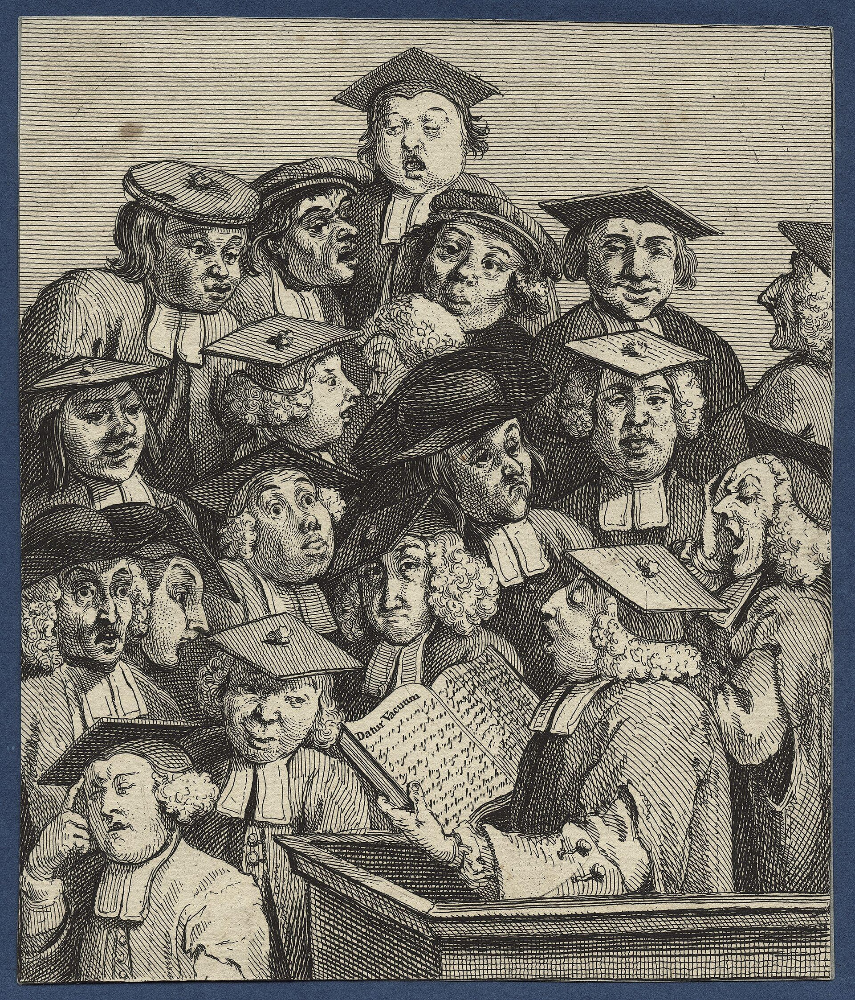
Link with the lesson: listening for gist and detail — some hear, some miss the point.
- Who is speaking?
- Who is listening?
- Why is listening a skill for continuous assessment towards the DNB?
- The lecturer.
- The scholars in the room — with unequal attention.
- Because oral comprehension is one of the five language activities that feed the English average.
Audio script (teacher reads twice)
Hi, I'm Noah. Last Saturday I visited the science museum with my class. We arrived at ten. First we saw a robot that can sort plastic. Then a guide told us that the robot had been tested for two years. I bought a postcard. We left at half past twelve.
Text written for this unit by Madame Carole Paoli Pompougnac.
Building your vocabulary
| gist | the general meaning |
| detail | a precise piece of information |
| to sort | to separate into groups |
| a guide | a person who explains to visitors |
| half past | 30 minutes after the hour |
Questions
- First listening: what is the general topic?
- What time did they arrive?
- What can the robot do?
- How long had it been tested?
- What did Noah buy?
- A class visit to a science museum.
- At ten.
- Sort plastic.
- For two years.
- A postcard.
Rule : listening method
1) Read the questions first. 2) Predict words you might hear. 3) First listen for gist. 4) Second listen for detail (numbers, names, negatives). 5) Never translate word for word; catch key words.
Exercise : listening micro-check
Based on the script, choose.
- They arrived at ten .
- The robot can sort plastic .
- It had been tested for two years .
- They left at half past twelve .
Listening — full method
What is expected (A2 to A2+/B1): Understand short clear messages on familiar topics; catch the main points and key details (times, places, people, simple reasons).
Method, step by step:
- Underline question words (who, when, where, how many, why).
- Guess the situation from the title.
- On listen 1, write only 3 gist words.
- On listen 2, fill details.
- Check negatives: don't, isn't, never.
- Transfer answers clearly.
Model gist notes: museum / Saturday / robot / postcard.
Checklist:
- Topic: a museum visit .
- Arrival time: 10:00 .
- Robot function: sort plastic .
- Test duration: two years .
- Souvenir: a postcard .
Dictation
Homework for tomorrow
- Ask someone to read the script twice while you answer without looking.
- Learn listening method steps.
My end-of-lesson weather check
Take two minutes for yourself. Your answers stay private: they are kept only on this device, the page sends nothing and nobody else can see them. If you want, you can show them to your teacher.
Lesson 2 : Reading (compréhension de l'écrit)
Objective : train reading for gist, detail and simple inference.
Déroulé de la séance Prof
- Expectations.
- Method.
- Timed reading.
- Graded practice /20.
The painting
Link with the lesson: careful reading — hands, book and concentration before you answer.
- What is Erasmus doing with his hands?
- What object matters most on the table?
- What should you not invent when you read?
- He writes or rests near a book/manuscript.
- The book / writing tools.
- Ideas that are not in the text.
Text: notice in a youth club
Greenbridge Youth Club — Friday workshop. From 5 p.m. to 6.30 p.m., Ms Patel will help students check online sources before they share news. Bring a notebook. Phones stay in bags during the workshop. If you arrive late, wait quietly at the door. Open to members at no charge; £2 for guests.
Text written for this unit by Madame Carole Paoli Pompougnac.
Expanding your vocabulary
| a workshop | a practical group session |
| a guest | a visitor who is not a member |
| quietly | without noise |
| to share | to give information to others |
| a notice | a short public written message |
Questions
- What is the workshop about?
- What times?
- What must you bring?
- Where do phones stay?
- How much for guests?
- Checking online sources before sharing news.
- 5 p.m. to 6.30 p.m.
- A notebook.
- In bags.
- £2.
Rule : reading method
1) Title + type of document. 2) Skim for gist. 3) Scan for numbers, names, places. 4) Infer only from clues. 5) Quote or paraphrase precisely.
Exercise : reading micro-check
Choose.
- The workshop helps students check sources .
- It ends at 6.30 p.m. .
- Phones stay in bags .
- Guests pay £2 .
Reading — full method
What is expected (A2 to A2+/B1): Understand short everyday texts (notices, messages, simple articles); find specific information; make simple inferences supported by the text.
Method, step by step:
- Identify the document type.
- Skim once without a pen.
- Scan with a pen for numbers and names.
- Answer with words from the text when possible.
- For inference, point to the clue.
Model: Document = notice. Gist = media workshop on Friday. Detail = 5–6.30; notebook; phones in bags; £2 guests.
Checklist:
- Workshop topic: check sources .
- Ends at 6.30 p.m. .
- Phones stay in bags .
- Guests pay £2 .
- Bring a notebook .
Dictation
Homework for tomorrow
- Reread the notice and write five questions for a classmate.
My end-of-lesson weather check
Take two minutes for yourself. Your answers stay private: they are kept only on this device, the page sends nothing and nobody else can see them. If you want, you can show them to your teacher.
Lesson 3 : Writing (expression écrite)
Objective : write 60 to 80 words on a familiar topic with clear organisation.
Déroulé de la séance Prof
- Expectations.
- Method and model.
- Timed writing.
- Peer checklist.
The painting
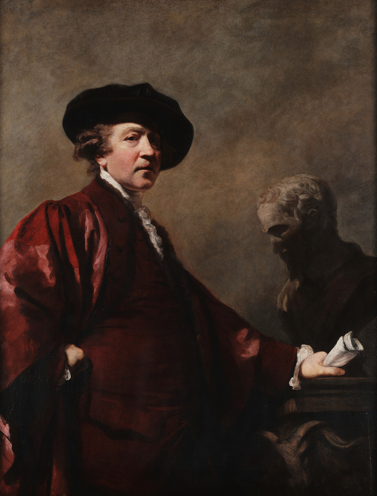
Link with the lesson: before you write 60–80 words, you organise what you want to show of yourself on the page.
- How does Reynolds present himself?
- What tools sit near him?
- How is a short exam text like a self-portrait?
- As a confident painter/thinker looking out.
- Painting tools / portfolio — signs of craft.
- You choose what to show, in a clear order.
Text: model 70 words
Last month I visited a museum with my class. First we looked at Turner's Temeraire. Then a guide explained the contrast between sail and steam. Finally I wrote a postcard to my cousin. I enjoyed the trip because I learned new words and I spoke English with my partner.
Text written for this unit by Madame Carole Paoli Pompougnac.
Building your vocabulary
| first, then, finally | organisation words |
| a contrast | a clear difference |
| to enjoy | to like doing |
| a partner | the person you work with |
Questions
- Find organisers.
- Find because.
- Which tense dominates?
- What personal reaction closes the text?
- Count the words roughly.
- First, Then, Finally.
- because I learned…
- Past simple.
- I enjoyed…
- About seventy.
Rule : writing method for DNB level
1) Read the task twice. 2) List 5 key words. 3) Plan: intro / two ideas / close. 4) Write 60–80 words. 5) Reread: task, grammar, spelling. 6) Count words.
Exercise : writing micro-check
Choose the better option.
- Organise with First, Then, Finally .
- Target length about 70 words .
- Close with a personal reaction .
- Reread for spelling .
Timed practice (out of 20)
Task: Your English partner asks about a school outing. Write 60–80 words: where you went, what you saw, what you learned. Use First / Then / Finally and because.
Grid /20: task 5; organisation 5; grammar 5; spelling/vocab 5.
Writing — checklist in action
What is expected (A2 to A2+/B1): Produce a short organised text on a familiar topic; link ideas; show basic control of present and past.
Method, step by step:
- Underline the task verbs.
- Brainstorm 5 words.
- Write without stopping for 15 minutes.
- Count words.
- Reread three times.
Model: see the 70-word text above.
Checklist:
Dictation
Homework for tomorrow
- Write the timed task in your binder (25 minutes).
- Apply the three rereads.
My end-of-lesson weather check
Take two minutes for yourself. Your answers stay private: they are kept only on this device, the page sends nothing and nobody else can see them. If you want, you can show them to your teacher.
Lesson 4 : Spoken production (oral en continu)
Objective : speak for about one to two minutes on a prepared topic.
Déroulé de la séance Prof
- Expectations.
- Method.
- Model.
- Recorded practice.
- Grid /20.
The painting
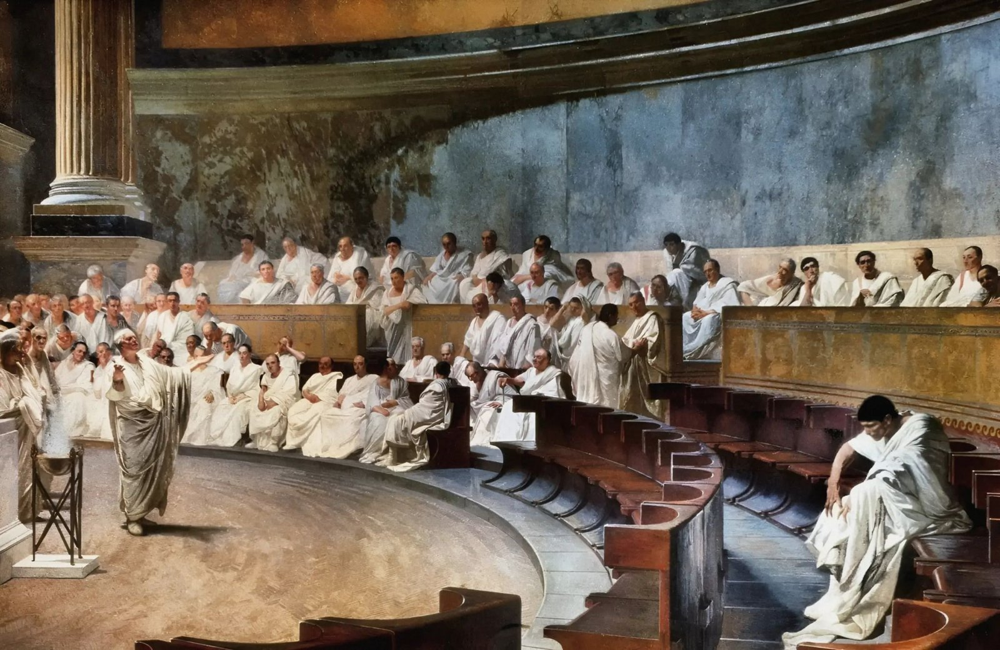
Link with the lesson: spoken production — one speaker stands, structures ideas, holds the room.
- Who stands to speak?
- Where do the other senators look?
- How long should your class short talk be here?
- Cicero, addressing the Senate.
- Towards him or away in tension.
- About one to two minutes.
Text: model continuous speech
Hello everyone. I'm going to talk about a painting that matters to me: Turner's Fighting Temeraire. First, it shows an old sailing ship. Then a steam tug pulls it away. Finally, the sunset makes the ending beautiful and sad. This painting helps me talk about change with precise words. Thank you for listening.
Text written for this unit by Madame Carole Paoli Pompougnac.
Expanding your vocabulary
| to matter | to be important |
| precise | exact |
| sunset | evening sun |
| change | when things become different |
Questions
- Find First/Then/Finally.
- What is the personal link?
- How does it end?
- Write your first and last sentences.
- Which tutorial will you open?
- All three present.
- Helps talk about change with precise words.
- Thank you for listening.
- Open.
- Preparing a short talk / Recording yourself.
Rule : continuous speaking method
Card with key words only. First sentence + last sentence memorised. Timer. Stand up. Record once, note one strength and one improvement, record again.
Exercise : oral continuous micro-check
Choose.
- On the card I write key words .
- I memorise my first and last sentences .
- I look at the audience .
- I end with Thank you for listening .
Speaking tutorial: Preparing a short talk
Your voice belongs to you. Speaking well is not the language of the rich. It is your added value, something that belongs to you personally, like your beauty or your charisma. Nobody can ever take it away from you.
Step by step:
- Read the task twice. Underline what you must do and how long you must speak.
- Write five key words, not sentences.
- Prepare your first sentence and your last sentence in full.
- Practise twice, standing up, with a timer.
- Breathe in slowly, look at your audience, smile and start.
Model: “Hello everyone. Today I'm going to talk about Sherlock Holmes. First, ... Then, ... Finally, ... Thank you for listening!”
My checklist:
Speaking tutorial: Using your voice: stress and intonation
Your voice belongs to you. Speaking well is not the language of the rich. It is your added value, something that belongs to you personally, like your beauty or your charisma. Nobody can ever take it away from you.
Step by step:
- Stand up straight and breathe in slowly through your nose.
- Find the stressed syllable in each long word: TEAcher, deTECtive, HOLiday. Say it louder and longer.
- In a sentence, stress the important words: I WANT to VISit LONdon.
- Make your voice go down at the end of statements and Wh- questions: Where do you live?
- Make your voice go up at the end of yes/no questions: Do you like it?
- Practise three times, slowly, then a little faster.
Model: “ELementary, my dear WATson.” “HOW did you KNOW?” (voice goes down) “Have you BEEN to AfghanISTAN?” (voice goes up)
My checklist:
Speaking tutorial: Recording yourself and assessing your work
Your voice belongs to you. Speaking well is not the language of the rich. It is your added value, something that belongs to you personally, like your beauty or your charisma. Nobody can ever take it away from you.
Step by step:
- With an adult's permission, use a voice recorder in a quiet place. The recording is for you only.
- Record yourself once without stopping.
- Listen with the checklist. Write one strong point and one thing to improve.
- Record yourself again and compare.
- Delete your recordings when you no longer need them.
Model listening sheet: Strong point: “my pronunciation of -ed is good.” To improve: “I speak too fast.”
My checklist:
Spoken production — full method
What is expected (A2 to A2+/B1): Present a short prepared talk on a familiar topic; organise ideas; be understandable with basic accuracy.
Method, step by step:
- Read the task and duration.
- Choose 5 key words.
- Write first and last sentences in full.
- Practise standing up twice.
- Record and improve one point.
Model: the Temeraire talk above.
Checklist:
Dictation
Homework for tomorrow
- Prepare a 90-second talk on one unit of the year.
- Record twice with the checklist.
My end-of-lesson weather check
Take two minutes for yourself. Your answers stay private: they are kept only on this device, the page sends nothing and nobody else can see them. If you want, you can show them to your teacher.
Lesson 5 : Spoken interaction + mock briefing
Objective : interact for a short exchange; understand the mock exam format.
Déroulé de la séance Prof
- Interaction method.
- Pair practice.
- Mock format explained.
- Homework: revise all skills.
The painting
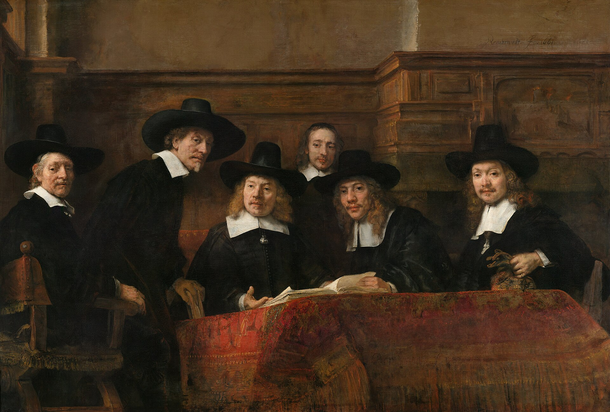
Link with the lesson: interaction — one explains from the book, others lean in with questions and replies.
- What makes a reply good in this scene?
- What polite phrase buys thinking time in class?
- What must you never do in assessed interaction?
- It answers the point on the page and adds a clear observation.
- I need a few seconds to think.
- Interrupt, insult, or use slang as a strategy.
Text: interaction model
A: What painting would you choose for a class museum? B: I'd choose Turner's Temeraire because it shows change. A: Why is change important for teenagers? B: Because we are becoming someone new, and we need precise words for that.
Text written for this unit by Madame Carole Paoli Pompougnac.
Building your vocabulary
| I'd choose | I would choose |
| because | to give a reason |
| precise words | exact vocabulary |
| to become | to grow into |
Questions
- Find a reason marker.
- How does B expand the answer?
- Prepare two follow-up questions.
- What will you say if you do not understand?
- List the five mock parts.
- because.
- Adds a reason linked to teenagers.
- Open.
- Could you repeat the question, please?
- Listening, reading, writing, continuous speaking, interaction.
Rule : interaction method
Listen to the end. Reformulate if needed. Answer + reason + example. Ask a question back. Keep slang out of the assessed turn; use Classroom English.
Exercise : interaction micro-check
Choose.
- If I don't understand: Could you repeat, please ?
- I answer with reason + example .
- I can say: I need a few seconds to think .
- I ask a follow-up question .
Speaking tutorial: Taking part in a discussion
Your voice belongs to you. Speaking well is not the language of the rich. It is your added value, something that belongs to you personally, like your beauty or your charisma. Nobody can ever take it away from you.
Step by step:
- Prepare two ideas and one example for each.
- Wait for your turn. Raise your hand or say: “Can I say something?”
- Give your opinion: “I think that…”, “In my opinion…”.
- Agree or disagree politely: “I agree with you because…”, “I see your point, but…”.
- Ask a question to keep the discussion going: “What do you think?”
- Respect everyone: no interrupting, no laughing at mistakes.
Model: “In my opinion, school uniforms are a good idea because everyone looks the same. I see your point, Lina, but what about personal style? What do you think?”
My checklist:
Speaking tutorial: Recording yourself and assessing your work
Your voice belongs to you. Speaking well is not the language of the rich. It is your added value, something that belongs to you personally, like your beauty or your charisma. Nobody can ever take it away from you.
Step by step:
- With an adult's permission, use a voice recorder in a quiet place. The recording is for you only.
- Record yourself once without stopping.
- Listen with the checklist. Write one strong point and one thing to improve.
- Record yourself again and compare.
- Delete your recordings when you no longer need them.
Model listening sheet: Strong point: “my pronunciation of -ed is good.” To improve: “I speak too fast.”
My checklist:
Spoken interaction — full method
What is expected (A2 to A2+/B1): Take part in a short exchange on familiar topics; ask and answer; react politely.
Method, step by step:
- Listen without interrupting.
- Answer + because + example.
- Ask one question back.
- Use polite repair phrases.
- Keep eye contact.
Model: the A/B dialogue above.
Checklist:
Dictation
Homework for tomorrow
- Practise a 2-minute interaction with a partner on phones at school.
- Revise all five skills before the mock.
My end-of-lesson weather check
Take two minutes for yourself. Your answers stay private: they are kept only on this device, the page sends nothing and nobody else can see them. If you want, you can show them to your teacher.
Brevet blanc LV — English mock exam
Objective : complete a full mock covering the five skills, graded /20 per part where indicated.
Before the test: where am I?
| I can… | Not yet | Getting there | I can do it |
|---|---|---|---|
| I can catch gist and detail in a short listening. | |||
| I can read a notice or short article accurately. | |||
| I can write 60–80 organised words. | |||
| I can speak for about two minutes from key words. | |||
| I can interact politely with reasons and questions. |
Quick language warm-up (out of 10)
Before the mock, check essentials.
- If I check sources, I will be safer.
- She said she was ready.
- The ship which fought…
- I used to hide behind books.
- Possibility: it might help.
Mock — Reading (out of 20)
Read the notice, then answer in English.
On 12 June, Year 9 will visit the National Gallery. Buses leave at 8.15 a.m. Students who arrive late will wait in room B. Bring a notebook and a bottle of water. Phones stay in bags during the visit. After the visit, each pair will present one painting in English for one minute.
Text written for this unit by Madame Carole Paoli Pompougnac.
- When is the visit? (2)
- What time do buses leave? (2)
- Who will wait in room B? (3)
- What two things must students bring? (3)
- What happens after the visit? (4)
- In four sentences, explain why phones stay in bags, using because and one conditional. (6)
- 12 June.
- 8.15 a.m.
- Students who arrive late.
- Notebook and bottle of water.
- Each pair presents one painting for one minute.
- Open with because + conditional.
Mock — Writing (out of 20)
Write 60–80 words to your English partner: tell them about the National Gallery visit (past), what you liked, and what you will do next time. Use First/Then/Finally and because.
| Criterion | Not met | Partly met | Met |
|---|---|---|---|
| Task and length. (5) | 0-2 | 3-4 | 5 |
| Organisation. (5) | 0-2 | 3-4 | 5 |
| Grammar range. (5) | 0-2 | 3-4 | 5 |
| Spelling and vocabulary. (5) | 0-2 | 3-4 | 5 |
Mock — Speaking continuous + interaction (out of 20)
Part A (10): one-minute talk on a painting from the year. Part B (10): answer two questions and ask one. Use tutorials Preparing a short talk and Taking part in a discussion.
| Criterion | Not met | Partly met | Met |
|---|---|---|---|
| Continuous speech structure | 5 | ||
| Accuracy and vocabulary | 5 | ||
| Interaction: answers + question | 5 | ||
| Voice, posture, politeness | 5 |
Mock — Dictation / listening write-up (out of 20)
Marking Prof
Start from 20; −1 per mistake. The teacher may also use the Noah museum script as a pure listening /20 with the lesson 1 grid.
Adapted mock tasks (out of 20) DYS
Same skills, shorter answers.
- Buses leave at 8.15 .
- Bring a notebook .
- Phones stay in bags .
- After the visit, pairs present a painting.
- Organisers: First, Then, Finally .
Recap: DNB English skills
Keep this page open in the last weeks.
I remember
- Five activities: listening, reading, writing, spoken continuous, interaction.
- Method + checklist every time.
- A2 required; aim A2+/B1 in LV1 where possible.
- Polite precise English beats slang in assessed turns.
- Mock exam = train conditions, then review errors.
Building your vocabulary
| gist | general meaning |
| detail | precise information |
| source | origin of information |
| checklist | list to tick |
| interaction | exchange with someone |
| mock exam | practice exam |
Grammar
Revision pack: present perfect; used to; passives; reported speech; will/going to/may/might; relative clauses; first conditional.
I revise
- Redo one practice /20 per skill.
- Reread your best writing with the grid.
- Record one talk and one interaction.
- Sleep, water, arrive on time.